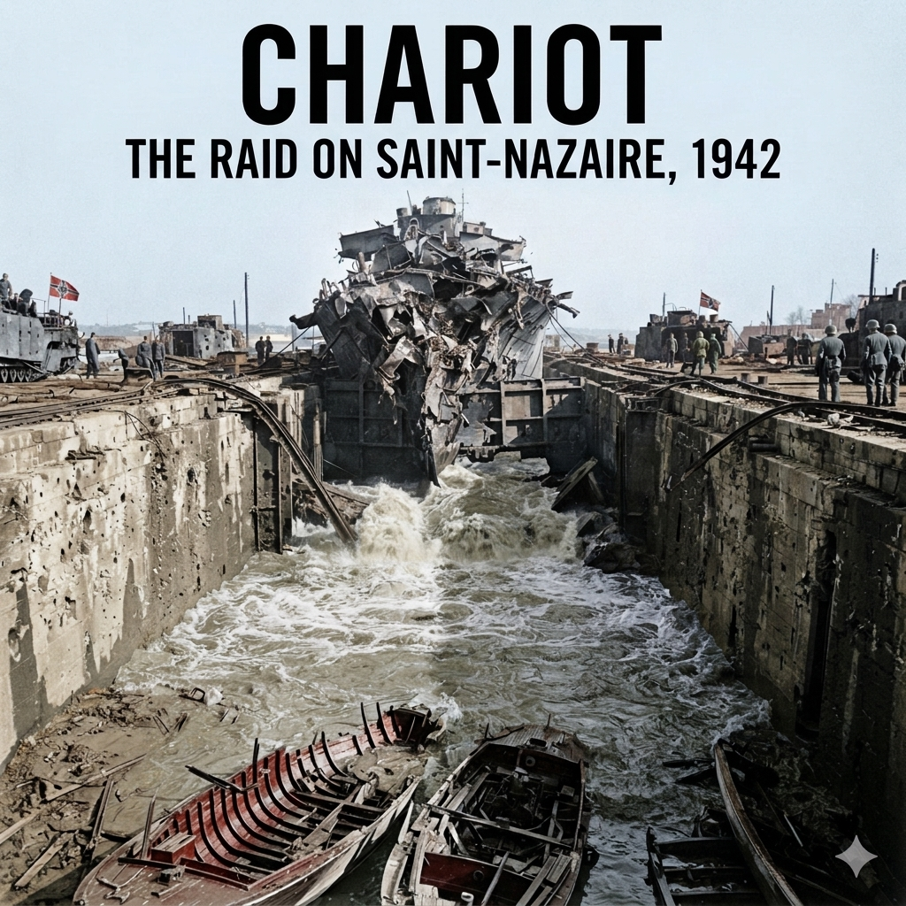

The Admiralty War Room smelled of damp wool, pipe tobacco, and the ozone off teleprinter ribbons. Down here, beneath feet of reinforced concrete, the war was reduced to coloured grease pencils crawling across the Atlantic basin.
Every officer who stood before the central wall map was haunted by a single ghost: Bismarck. Eight months earlier, it had taken the better part of the entire Royal Navy—three battleships, two battlecruisers, two aircraft carriers, thirteen cruisers, and twenty-one destroyers—to hunt down and batter the German behemoth into the sea off Brest. Even then, it had turned on a razor’s edge. One lucky torpedo from an obsolete biplane had jammed her rudders; without that, she would have made the safety of the French coast.
Now, her sister was awake.
In the Baltic, the battleship Tirpitz was completing her working-up trials. She was larger than Bismarck—over fifty-two thousand tons fully laden, eight 15-inch guns, armour belts over a foot thick, and capable of thirty knots. If she broke out into the open convoy routes of the North Atlantic, Britain would starve within ninety days. Escorts running merchantmen from Halifax and Freetown had nothing that could trade broadsides with her.
Yet a warship of that magnitude was not merely a weapon; it was an industrial parasite. Every knot through heavy seas wore her turbines. Every engagement carried the certainty of damage. She could not operate in the western ocean without an open base on the Atlantic seaboard where she could be docked, scraped, repaired, and refitted.
There were only three ports under German control on the Atlantic shelf capable of handling major fleet units: Brest, Lorient, and Saint-Nazaire.
Brest was ruled out by Berlin; it was well within range of RAF Bomber Command’s heavy squadrons. The battlecruisers Scharnhorst and Gneisenau had spent months there being hammered into scrap before being forced into their humiliating winter dash up the English Channel. Lorient possessed only submarine shelters and mid-sized dry docks.
That left one single target on the map.
Four hundred miles south of the English coast, six miles up the winding, silt-choked estuary of the River Loire, lay the port of Saint-Nazaire. There sat the Forme Écluse Louis Joubert—known universally as the Normandie Dock.
Built in the 1930s to service the colossal French luxury liner SS Normandie, it was a triumph of civil engineering: 1,148 feet long, 164 feet wide. It was, by an accident of pre-war commercial vanity, the only dry dock on the entire European Atlantic coastline capable of receiving the Tirpitz.
The strategic equation was absolute: Deny the Normandie Dock, and the German Naval High Command would never dare commit Tirpitz to the Atlantic. If she took a torpedo or blew a boiler out past the Faroes, she would have no harbor to limp into. She would be trapped between British naval strength and a hostile ocean.
The problem landed on the desk of Lord Louis Mountbatten at 1A Richmond Terrace, headquarters of the fledgling Combined Operations Command.
Mountbatten, forty-one, ambitious, and recently appointed by Churchill to turn Britain’s raiders from amateur irritants into an amphibious strike arm, reviewed the files with his naval and military planners.
The initial files made grim reading. Bomber Command had already been asked to destroy the dock. Air Marshal Arthur Harris had been blunt: a precision strike on a lock gate fifty feet wide, buried under the low cloud cover of the Bay of Biscay, was an operational impossibility. High-explosive bombs bounced off the reinforced concrete caissons or buried themselves uselessly in the surrounding silt.
Torpedo bombers from Coastal Command faced equal futility. The Germans had laced the approaches with heavy anti-torpedo netting, and the tidal waters of the Loire were so shallow that any dropped aerial weapon would bury its nose in mud before arming.
"If the air cannot reach it," Mountbatten told his staff, "then we walk in through the front door."
The front door, however, was a slaughterhouse.
Saint-Nazaire was not merely a port; it had been converted into an oceanic fortress. To enter the mouth of the Loire, any vessel would have to run a six-mile gauntlet of coastal batteries. The German garrison, under the naval command of Kapitän zur See Karl-Conrad Mecke, commanded hundreds of guns: 75mm, 88mm, and batteries of rapid-fire 20mm and 37mm FlaK guns mounted on high concrete towers overlooking every bend of the river.
A standard naval raid was impossible; the river was too shallow for modern British destroyers or cruisers to navigate without running aground on the mudbanks, where shore batteries would systematically turn them to colanders.
The planners leaned closer over the hydrographic charts of the Loire estuary.
"The main channel is suicidal," one naval planner muttered, pointing the tip of a pencil at the buoyed deep-water run beneath the guns of Pointe de Chémoulin. "The guns are pre-ranged. Nothing survives that passage."
"Then we don't use the channel," another replied, tapping the expansive, pale-blue wash marked Chaussée des Paysans. "The shallows. The mudflats."
"A warship cannot cross the flats. The draught is too deep."
"A lightened one could. At the peak of high spring tide. Stripped to the bone."
The concept took shape, cold and stark. You could not drop enough explosives onto the caisson from the sky, and you could not float enough explosives past the nets on a torpedo. Therefore, the vessel itself had to become the weapon.
A ship would have to be driven up the estuary under false colours, cross the mudflats under cover of night, run the gauntlet of the coastal batteries, and ram the outer steel gate of the Normandie Dock at full speed. Once embedded, she would be scuttled to prevent the Germans from towing her away.
Commandos would swarm off her decks, penetrate the shore installations, and systematically dynamite the massive pumping stations, winding houses, and machinery that kept the dry dock alive.
Then, when the raiders were gone—or dead—the ship's bow would detonate. Not with a standard scuttling charge, but with thousands of pounds of high explosive, pulverizing the steel caisson and allowing millions of gallons of seawater to smash through the dry dock.
Mountbatten studied the plan. It required the complete cooperation of the Admiralty, the RAF, and the Army. More than that, it required an expendable warship, an armada of light craft to carry the commandos, and hundreds of men willing to enter a trap six miles behind enemy lines.
"Find me an obsolete destroyer," Mountbatten instructed his naval staff. "Something we can afford to lose. Strip her until she draws no more than fourteen feet of water. And find out how much amatol we can pack into her eyes."
In the south of England, the orders were cut and sent down the wires to Plymouth.
At Devonport Dockyard, tied to a buoy in the cold grey drizzle of the Hamoaze, lay a relic of an older war: a flush-deck, four-funnelled destroyer that Britain had bought second-hand from the United States. She was thirty-two years old, narrow-beamed, and worn out from Atlantic convoy escort work.
Her name was HMS Campbeltown.
The oxyacetylene torches hissed with a pale, blinding blue flame, spitting showers of white-hot slag into the dark waters of the basin.
For two decades, she had been hull number 131 of the United States Navy—the USS Buchanan, laid down in Maine during the final months of the First World War. She had a narrow, knife-like beam of barely thirty feet, four spindly funnels rising like iron stovepipes from her flush deck, and an Atlantic roll that could turn a veteran sailor’s stomach inside out. In September 1940, President Roosevelt had traded her and forty-nine of her rusting sisters to a desperate Britain in exchange for ninety-nine-year leases on Caribbean naval bases.
Recommissioned into the Royal Navy as HMS Campbeltown, she had spent eighteen months shivering through the grey heaving swells of the Atlantic, escorting lumbering convoys, surviving collisions, and wearing her machinery down to the bearings.
Now, she was stripped of her identity under an order marked MOST SECRET.
Lieutenant Commander Stephen Halden Beattie, Royal Navy, stood on the greasy stone apron of the dry dock, a battered cap pulled low against the Plymouth rain. At thirty-three, Beattie was a cool, laconic officer with a dry sense of humor and a reputation for iron nerves under fire. Next to him stood Lieutenant Nigel Tibbits, a twenty-five-year-old torpedo and explosives specialist on loan from the mining school at HMS Vernon.
Below them, dockyard shipwrights were cutting Campbeltown to pieces.
"They're taking every ounce of flesh off her, Nigel," Beattie remarked, watching a dockyard crane swing a massive twin-torpedo mount through the drizzle.
"She has to float on spit and sawdust, sir," Tibbits replied without looking up from his blueprints. "The hydrographic surveys of the Loire are unforgiving. At high water on a spring tide, the mudflats of the Chaussée des Paysans offer barely fifteen feet of depth. Fully laden in standard trim, she draws eighteen. If she grounds four miles out, the shore batteries will use her for target practice."
To shave four feet off her draught, the dockyard was systematically disemboweling the ship.
Her main armament—the old American 4-inch guns—was winched off the foredeck and discarded. In their place, a single British 12-pounder quick-firing naval gun was bolted down on the forecastle, positioned to clear the shore pillboxes during the run-in. The torpedo tubes, depth-charge throwers, searchlight towers, whalers, excess mess tables, non-essential internal doors, spare anchors, and two hundred tons of ballast were ripped out and left on the quay.
Then came the surgery on her silhouette.
The German coastal gunners at the mouth of the Loire knew the shapes of British destroyers intimately. If Campbeltown appeared on their searchlight horizons with the unmistakable silhouette of a four-funnelled flush-decker, the 88mm batteries would open fire at maximum range. She had to fool the German lookouts for ten minutes—long enough to cross the mud and close the distance.
Boilermakers cut away the third and fourth funnels entirely, plating over the uptake vents. The remaining two forward funnels were hacked off and reconstructed with a forty-five-degree slant, capped with fake lips to mimic the distinctive raked appearance of a German Möwe-class torpedo boat.
Along the upper deck, welders worked around the clock attaching quarter-inch steel plating to the bridge, the chartroom, and the wheelhouse. Slits barely two inches wide were cut into the armor to give the helmsman and the captain a razor-thin view forward. Behind the bridge, long steel splinter plates were welded down both sides of the deck.
"The commandos will have to lie flat behind those sheets," Beattie said, climbing the gangway and stepping onto the gutted deck. The ship felt cavernous and empty, echoing with the ring of hammers. "How many men are they putting aboard her?"
"Eighty commandos," Tibbits said, stepping down into the forward mess deck. "Plus your crew of seventy-five. They'll be packed like herrings in an iron tin. If a 20mm round penetrates the hull at water level, the shrapnel will ricochet off the opposite plates."
"And the armor?"
"It will stop rifle fire and machine-gun splinters," Tibbits admitted, tapping a bare steel bulkhead with his knuckle. "It won't stop an armor-piercing round from an eighty-eight. If an 88mm hits the bridge, armor or no armor, there won't be anyone left to hold the wheel."
Beattie ran his hand along the cold rim of the armored wheelhouse. "Then we don't let them range us with the eighty-eights until it's too late for them to matter."
Tibbits led the captain down the ladder into the dark forward compartment, directly beneath the forecastle mess deck. The air down here was thick with bilge water and cold red lead paint.
The deck plating had been cut open, revealing the raw ribs of the ship's keel, directly behind the forward collision bulkhead.
"This is the space," Tibbits said quietly, shining an inspection lamp into the void.
"Can you wedge it all in?" Beattie asked.
"Easily," Tibbits replied. His voice was clinical, devoid of drama. "The depth charges will be stacked in tiers against the bulkhead. We’ll pour concrete around them to form a solid, immovable block. When you hit the caisson, the shock of the ramming won't dislodge them. The impact will drive the nose thirty feet into their dock, and the charges will stay welded right against the steel gate."
Beattie looked at the empty hold. The men who would sail in this ship would be sleeping and eating less than ten feet above a mass of high explosive large enough to obliterate a small town.
"When do the lorries arrive from Woolwich?" Beattie asked.
"Tomorrow morning, under armed guard," said Tibbits. "Twenty-four Mark VII depth charges. Four and a half tons of amatol."
The lorries came through the dockyard gates under military escort, their tarpaulins tied down tight against the mist. Royal Navy red-caps cleared the cobblestones, waving off the dockyard mateys until the heavy Leylands backed down onto the quay alongside Campbeltown.
Inside the cargo beds were twenty-four steel cylinders, painted dull green, each weighing over four hundred pounds: Mark VII naval depth charges. Together, they contained four and a quarter tons of amatol—an unstable mixture of ammonium nitrate and TNT.
Lieutenant Nigel Tibbits stood by the hatchway on the forecastle, an unlit cigarette clamped between his teeth, checking the serial numbers against his clipboard. Beside him, Chief Engine Room Artificer H.K. Howard directed the dockyard crane’s wire sling.
"Easy on the drop, Chief," Tibbits said. "Keep them clear of the coamings."
"Aye, sir," Howard grunted, watching the steel barrels descend one by one into the gloom of the lower deck. "If one of these goes off, they won't even find our boots."
"If one goes off," Tibbits remarked, "Devonport will be a tidal basin."
Down in the bowels of the forward hold, directly behind the collision bulkhead, shipwrights had welded a heavy rectangular steel tank across the ship's keel. The space was claustrophobic, smelling of damp iron, stale sweat, and sea damp.
Tibbits went below to oversee the stacking. The charges were laid out in tiers, wedged tightly together against the bulkheads to eliminate any air gaps. Between the tiers, ratings ran continuous loops of Cordtex—high-velocity detonating cord with a core of pentaerythritol tetranitrate (PETN)—threading the explosive cord through the primer tubes of each individual cylinder.
Tibbits designed the circuit with complete redundancy. There were two separate rings of Cordtex, each independent of the other, so that a severed line would not break the chain of detonation.
Then came the cement.
A hose was lowered from the quay, pumping thick, grey slurry down through the mess decks and into the steel box. Trowel by trowel, dockyard hands worked the concrete into every crevice, burying the cylinders in an immovable monolith.
Beattie climbed down the iron ladder and crouched beside the wet grey mass. He tapped the drying concrete with the sole of his boot.
"How long to cure?"
"Forty-eight hours to set solid, sir," Tibbits answered, wiping grey paste from his knuckles with an oily rag. "Once it cures, the charges become part of the ship's structural frame. When we hit the caisson at twenty knots, the inertia won't throw the bomb backward through the mess deck. The ship's nose will crumple around it, and the concrete will keep the amatol pressed flush against the outer face of their gate."
"And the triggers?" Beattie asked.
Tibbits reached into his uniform tunic and pulled out a small, velvet-lined wooden box. Inside lay several slender tubes of dull brass, no thicker than a fountain pen.
They were Number Ten Delay Switches—known to Combined Operations and the Special Operations Executive as "timing pencils."
"No mechanical clocks," Tibbits explained, holding one up to the yellow light of an inspection bulb. "Clocks tick. Clocks can be heard by an inspection party. Clocks can jam if the shock of the ramming fractures their balance wheels. These rely entirely on chemistry."
Beattie took the pencil. It felt surprisingly light.
"Inside the upper chamber," Tibbits pointed out, "is a thin glass ampoule of copper chloride solution. Beneath it is a spring-loaded steel striker, held back by a thin piece of high-tensile music wire. When we crush the brass sleeve with pliers, the glass breaks. The acid leaks onto the wire and slowly eats through it. Once the wire thins to the breaking point, the spring snaps the striker down onto a percussion cap."
"How accurate are they?"
"They're temperature-sensitive," Tibbits said candidly. "At eighty degrees Fahrenheit, they'll fire in six hours. In freezing river water, they slow down. I'm arming them with the eight-to-fourteen-hour pencils. We'll crush the vials when we're in the estuary, just before we hit the gate."
"Which gives us until when?"
"If we crush them at one in the morning, they won't fire until mid-morning at the earliest. Nine, ten, maybe eleven o'clock. Long after we've abandoned ship and Newman's commandos have blown the shore facilities."
Beattie handed the brass tube back. "And if the acid is slow? If the pencil fails?"
"There are six of them," Tibbits said. "Three on each Cordtex ring. Plus a manual safety fuse as a back-up, lead-lined, run up to the upper deck. If only one pencil does its job, all twenty-four charges will ignite in a single microsecond."
Directly above their heads, the deckhead rang with the clatter of sea boots.
Eighty soldiers of the commando assault teams would be quartered in the mess deck directly above this concrete vault. They would sleep on canvas bunks swung inches above a four-and-a-half-ton block of amatol, eating tinned corned beef and smoking Players cigarettes over a tomb engineered to shatter an oceanic dry dock.
Beattie looked at the wet cement, watching the grey surface skin over in the damp cold.
"Very well, Nigel," Beattie said, turning back toward the ladder. "Button it up. Let's see what kind of men Newman is bringing aboard."
The King George V Graving Dock in Southampton was a cavernous trench of grey granite, draining forty-eight million gallons of Solent water when pumped dry. In the freezing blackness at the bottom of the basin, thirty men moved without flashlights.
They had greasepaint smeared across their faces and strips of black friction tape bound around every brass buckle to stop the clink of metal. They moved by touch, their palms running over frozen steel pipes, hydraulic valves, and the colossal cast-iron casings of the centrifugal pump impellers.
"Hands off the torch," Captain W.H. "Bill" Pritchard of the Royal Engineers whispered from the darkness. His voice had the dry, clipped authority of an instructor who tolerated no mistakes. "If you need a lamp to find the intake manifold in Southampton, you’ll be a corpse on the floor of Saint-Nazaire before you find the detonator well. Do it again. By feel."
Watching from the catwalk forty feet above was Lieutenant Colonel Augustus Charles Newman.
At thirty-seven, Newman did not fit the swashbuckling caricature of the newly formed Commandos. He wore a neat mustache, carried himself with quiet, unhurried dignity, and was an officer of the Territorial Army’s 4th Battalion, The Essex Regiment. In civilian life, he was a civil engineer with Peter Lind & Company, specializing in heavy reinforced concrete, docks, and wharves.
It was precisely this civilian background that had caused Combined Operations to give him command of the military force. Newman understood the tensile strength of pre-stressed concrete, the shear points of hydraulic caissons, and the vital organs of a modern dry dock. He knew that steel could be replaced, but custom-cast pump impellers took years to forge.
Under his command was No. 2 Commando—two hundred and twenty-six men—reinforced by forty demolition specialists hand-picked from Nos. 1, 3, 4, 5, 9, and 12 Commandos. Total strength: two hundred and sixty-six soldiers.
Newman had organized them into three distinct groups with surgical precision:
First were the Demolition Teams. Commanded overall by Captain Bob Montgomery, Royal Engineers, these men carried no rifles. Their weapons were 60-to-90-pound rucksacks packed with Nobel’s 808 plastic explosive—a lethal compound smelling sharply of bitter almonds—along with sledgehammers, axes, and reels of Cordtex.
Second were the Protection Teams. Lightly burdened, armed with Thompson submachine guns, Colt .45 automatics, and Bren guns, their sole duty was to form a defensive ring around the demolition men and kill anything that moved while the charges were laid.
Third were the Assault Teams. Their task was direct and brutal: storm off the bows and gangways, overwhelm the German machine-gun pillboxes, clear the flak towers, and eliminate the searchlight platforms before the shore defenses could consolidate.
Down on the dry dock floor, Lieutenant Stuart Chant of the Gordon Highlanders was running his fingers over an impeller housing for the twentieth time. Chant was twenty-four, tall, and broad-shouldered. He had been assigned the most dangerous engineering target of the entire operation: the subterranean pumping station that drained the Normandie Dock.
Pritchard stepped up beside him in the gloom.
"What is the charge, Chant?"
"Forty pounds of Nobel's 808 against each main pump housing," Chant recited without hesitation. "Positioned between the cylinders and the intake valves. Ring mains tied with Cordtex to ensure instantaneous initiation. Backup safety fuses cut for a ninety-second burn."
"And if you're interrupted before you can tie the ring?"
"We blow them individually with two-minute fuses and clear out."
"You clear out if you can walk," Pritchard corrected flatly. "The pumps must die. If the pumps survive, the dock can be salvaged in six months. If the pumps are shattered, the basin stays flooded for the rest of the war."
Newman descended the iron ladder to the dock floor. The air down here was ice-cold, smelling of river mud and salt. The men gathered around him in the shadows. They were young—most in their early twenties—drawn from Scottish regiments, the Guards, the infantry of the line, and the miners of South Wales.
They wore dark woollen cap comforters pulled down over their ears, heavy wool battledress, and rubber-soled plimsolls or ammunition boots wrapped in sacking to muffle their footfalls. Each man carried a toggle rope around his waist, a Fairbairn-Sykes fighting knife in his belt, and a tubonic ampoule of morphine pinned inside his breast pocket.
"Colonel," Montgomery said, wiping grease from his hands. "The timings are down to nine minutes for the main installations. If the protection parties keep the pillboxes off our backs, nine minutes is all we need to set the cords."
"You will not have nine quiet minutes," Newman said gently. His voice was conversational, almost fatherly, which made the words all the more chilling. "The garrison at Saint-Nazaire has had two years to pre-range every inch of that concrete. From the moment the bows hit, the quays will be swept with automatic fire."
Newman looked at the faces around him. None of these men yet knew the target's name. They knew only that they were heading for occupied France, that they were striking a naval facility, and that they would not be going in by air.
"Tomorrow morning, the trains take us to the assembly area," Newman told them. "Security is now absolute. No letters. No leave. No telephone calls. If anyone speaks of this training outside this dock, I will have him placed in close arrest until the war is finished."
He turned to Captain Montgomery. "Bob, ensure every rucksack is weighed. Not an ounce over the limit. A man carrying eighty pounds of explosive who falls into thirty feet of seawater will go straight to the bottom like an iron pig."
"Understood, sir."
Twelve hours later, the special troop trains pulled out of Southampton, their window blinds pulled down and secured with copper wire. They steamed southwest across the rolling green of Devon and into Cornwall, rolling to a halt on the sidings of Falmouth.
There, waiting in the sheltered waters of the Carrick Roads, lay the fleet that was supposed to carry them to France—and, if luck held, bring them back.
The broad, sheltered anchorage of Carrick Roads was slick with an oily sheen under an overcast Cornish sky.
As the lighters ferried the men of No. 2 Commando out from the railway quays, they got their first look at the fleet that was supposed to carry them home.
At the center of the roads lay Campbeltown, looking alien and menacing. Her two raked funnels and sliced superstructure gave her the crouched, predatory silhouette of a German Möwe. But around her, riding high on the swell like water-beetles, were the vessels of the 28th and 7th Motor Launch Flotillas.
There were sixteen Fairmile 'B' launches, accompanied by a Fairmile 'C' Motor Gun Boat—MGB 314—and a squat, highly modified motor torpedo boat, MTB 74.
The Fairmiles were one hundred and twelve feet long, slender and light. They were never designed for an assault on a fortified naval fortress. Their hulls were built entirely of wood: double-diagonal African mahogany over timber frames. Against a rifle bullet, mahogany offered token resistance. Against a 20mm explosive cannon shell or an 88mm high-explosive round, it was kindling.
Worse still was what was bolted to their decks.
To make the four-hundred-mile passage across the Bay of Biscay, run up the Loire, and return to England, their internal fuel tanks were insufficient. Strapped to the open upper deck of each Fairmile were two five-hundred-gallon galvanized steel auxiliary tanks, plumbed directly into the engines.
They were filled with high-octane aviation petrol.
The commandos climbed aboard their assigned launches in heavy silence. The smell was suffocating: wood stain, salt damp, and the sharp, volatile vapor of high-octane gasoline leaking from fuel lines.
"Good grief," muttered Lance-Sergeant Arnold Howarth, setting his 70-pound kitbag down on the deck of ML 262. He tapped the thin galvanized skin of an auxiliary tank with the butt of his Fairbairn-Sykes knife. "One tracer into this and we won't need to land in France. We'll be halfway to heaven in three seconds."
The soldiers quickly christened the Fairmiles "The Flying Coffins."
Aboard MGB 314, which was to serve as the operational flagship, Commander Robert Edward Dudley Ryder, Royal Navy, reviewed the final dispositions with Lieutenant Colonel Newman.
Ryder was thirty-four years old, lean, sharp-featured, and an experienced polar explorer who had commanded expeditions to Antarctica before the war. He was methodical, quiet, and possessed an encyclopedic knowledge of navigation in foul waters.
Beside them stood Sub-Lieutenant Robert "Mickey" Wynn, the eccentric commander of MTB 74. Wynn's boat was a peculiar, experimental craft. Her torpedo tubes were not mounted along the waist, but rigged high on the forecastle, pointed forward and slightly downward.
"The torpedoes are fitted with sixty-hour delayed-action time fuses, Commander," Wynn reported, adjusting the eye-patch he wore over an eye lost in a previous engagement. "The idea is to fire them over the torpedo booms. If they hit the outer lock gates of the Old Entrance, they sink to the riverbed and sit there until Monday morning."
"Provided you survive long enough to lay them," Ryder said evenly.
At 18:00 on 24 March, the curtain of secrecy was finally drawn back.
Newman, Ryder, and Beattie gathered the sub-unit commanders, demolition leaders, and senior NCOs below deck for the operational briefing. An orderly pulled a blanket from the wall, exposing a massive, eight-foot-wide hydrographic chart flanked by aerial reconnaissance photographs.
The word was spoken aloud for the first time: Saint-Nazaire.
Newman took a pointer and rested the tip on the massive rectangle of the Normandie Dock.
"Gentlemen," Newman began, his voice calm, measuring every syllable. "This is the Forme Écluse Louis Joubert. It is the only dry dock outside Germany capable of housing the Tirpitz. The Admiralty requires that this dock be put out of action for the duration of the war. That is our task."
A low murmur ran through the cabin.
"The assault is divided into two forces," Newman continued. "Campbeltown will lead the line, carrying the demolition parties for the outer caisson, the underground pumping house, and the hydraulic winding gear. She will ram the caisson at full speed and become a fixed demolition charge. The launches will follow in two parallel columns—Port Column to the Old Entrance, Starboard Column to the Old Mole."
He traced the routes with the wooden pointer.
"Once the demolitions are blown, all assault and protection teams will withdraw to the Old Mole and the Old Entrance, where the Motor Launches will embark us for the journey back to England under naval escort."
The officers stared at the chart. They looked at the winding six miles of the Loire channel. They looked at the battery markers: seventy-five heavy and light anti-aircraft guns, coastal defense positions, FlaK towers lining both banks.
Captain Bob Montgomery raised a hand. "Colonel, if the launches are wooden, and carrying petrol on deck... what happens if the boats are sunk before they reach the Old Mole?"
The wardroom fell dead silent. The engine thrum of an auxiliary generator outside vibrated through the bulkheads.
Newman lowered the pointer. He did not look away from his officers.
"If the launches cannot extract us," Newman said quietly, "we will not surrender. We will form up as a fighting battalion, blow the lock gates behind us, and fight our way out through the town into the open country. From there, each man will make his way south toward Spain."
There was no cheering. No bravado. The mathematical odds were plain to every man in the room.
They were being asked to sail forty-year-old mahogany hulls into the concentrated fire of a German naval fortress, complete complex demolitions in pitch darkness, and escape across a river burning with their own fuel.
Late that night, in the mess decks of Campbeltown and the cramped cabins of the Fairmiles, men wrote their final letters home. Under operational orders, the letters were collected in lead-weighted mailbags, sealed with red wax, and locked in the base safe at Falmouth. They were only to be posted if the ships did not return.
On the morning of 26 March, the grey skies over Cornwall broke.
At 14:00, a signal hoist rose to the yardarm of the shore station: EXECUTE OPERATION CHARIOT.
Capstans groaned. Iron links clattered through hawsepipes. One by one, the sixteen wooden launches fell into two parallel lines behind the disguised destroyer. At the head of the formation, MGB 314 took the lead.
The flotilla turned toward the open sea, leaving the safety of the English coastline behind them.
Once clear of the Black Rock at the entrance to Falmouth, the shelter of the Cornish headlands fell away. The Atlantic opened before them: a vast, rolling slate-grey wilderness topped with breaking whitecaps.
Force Z formed into its cruising order.
Out in front, screening the formation against U-boats, steamed the two Hunt-class escort destroyers, HMS Atherstone and HMS Tynedale. Behind them, the raiders fell into three parallel columns.
In the center plowed Campbeltown, her two chopped-down funnels trailing thin black coal smoke. Fastened to her stern by a heavy manila towline wallowed MTB 74. Mickey Wynn’s torpedo boat had high-strung, racing-style engines that fouled at low speeds; to save her machinery and fuel for the assault, she was dragged through the swells like an unruly terrier on a leash.
Flanking Campbeltown were the sixteen wooden Fairmile launches, divided into two columns eight cables apart: the 7th Flotilla to port, the 28th to starboard. At the head of the port column rode MGB 314, carrying Ryder, Newman, and the combined headquarters staff.
At the mainmast of Campbeltown and the small signal masts of each launch fluttered a stark, red-and-black banner: the Kriegsmarine ensign.
Flying enemy colors was a recognized maritime ruse under the international laws of war, provided the national ensign was hoisted before the first shot was fired. If German reconnaissance aircraft appeared from the French coast, the Admiralty hoped the formation would be logged as a routine German coastal patrol or an anti-submarine sweep returning to Brest.
To further sell the deception, Ryder did not shape a direct course southeast toward the Loire. He steered southwest, out into the deep Atlantic waters west of Ushant. Anyone tracking them from the air or through intercepted wireless traffic would conclude the small convoy was an overseas movement bound for Gibraltar.
By dusk, the physical ordeal began.
The Atlantic swell caught the shallow-draft, flat-bottomed Fairmiles broadside. The mahogany launches began a violent, sickening roll—twenty-five degrees to port, twenty-five degrees to starboard, shivering as their twin screws lifted clear of the water and raced with a high-pitched scream before biting back into the sea.
Down inside the cramped cabins of the launches, the air grew foul.
The heat of the auxiliary petrol lines mingled with the stench of vomit, damp wool, and bilges. The Commandos—toughened by months of forced marches in the Scottish Highlands—found their bodies betraying them. Men lay stacked on wooden lockers and across cabin sole-plates, retching violently into buckets or their own steel helmets.
Corporal Donald Wheeler, an assault commando aboard ML 457, wedged himself between a bulkhead and an ammunition box, holding onto an iron bracket with white knuckles. Beside him, men were so utterly emptied by seasickness that they could barely lift their heads to check their weapons.
"Keep your breeches clean," Lance-Sergeant Arnold Howarth shouted over the roar of the engines, his own face an ash-grey shade of green. "Dry the bolts! If the salt gets into the firing pins, the grease turns to glue!"
Aboard Campbeltown, the motion was different—a heavy, shuddering pitch as her knife-like bow sliced through the green water.
In the gutted mess decks forward, eighty commandos of the main assault and demolition parties sat in rows under yellow battle lanterns. They were suspended directly above the concrete slab that sealed the four and a half tons of amatol. Every time the destroyer’s bow plunged into an Atlantic trough, the impact vibrated through the deck plates beneath their boots like an iron sledge striking an anvil.
"That's forty feet of steel between us and the Atlantic," Lieutenant Stuart Chant told his demolition team, checking the waterproof tape around the fuses of their Nobel's 808 charges. "And four tons of dynamite underneath us. Try not to drop a spanner."
Nobody laughed. The men worked methodically, oiling their Thompson submachine guns, checking the primer cords of their Bangalore torpedoes, and testing the snaps of their toggle ropes.
Up on the bridge, behind the quarter-inch splinter plates, Beattie stood beside his navigating officer, Lieutenant A.R. Green, Royal Naval Reserve. The night was pitch-black. A blackout was enforced with absolute rigor; not a single pinpoint of light showed from any ship in the formation. No cigarettes were permitted on deck; bridge binnacles were masked to a dim red glow.
"Towline parted on MTB 74, sir," the bridge messenger reported from the darkness behind them.
Beattie sighed, keeping his eyes on the grey wake of Tynedale ahead. "Slow by two knots. Signal MTB 74 with the shaded lamp. Pass a fresh hawser. We don't leave Mickey Wynn behind."
For forty minutes in the freezing dark, deck ratings on Campbeltown hauled on dripping hemp lines, taking the bucking torpedo boat back into the tow. It was brutal, finger-shredding labor in the spray, but the line was remade, the tension taken up, and the formation pushed forward.
By 04:00 on 27 March, Force Z crossed the invisible line onto the continental shelf and entered the Bay of Biscay.
The sea moderated, flattening to a gentle, oily swell veiled in early morning mist. The horizon to the east was empty. They were two hundred miles off the coast of occupied France, completely undetected.
Then, at 07:20, as the first grey light of dawn broke across the water, the siren on the lead escort destroyer, HMS Tynedale, wailed an urgent, stuttering alarm.
Two miles off the port bow of HMS Tynedale, a slim, dark blade cut a furrow through the low morning swell. Behind it rose the rounded iron lip of a conning tower, shedding a sheet of grey foam.
Aboard Tynedale, the starboard bridge lookout yelled into his voicepipe: "Submarine! Bearing red four-zero! Two miles!"
Lieutenant Commander H.E.F. Tweedie did not hesitate. "Alarm starboard. Ring on full ahead. Stand by forward four-inch!"
The destroyer’s twin screws churned the Biscay water into an emerald boil. Her bows rose as she swung hard to port, heel angle sharpening, racing directly toward the contact. Across her foredeck, the gun crew slammed a high-explosive round into the breach of the twin 4-inch mounting.
Crack.
The muzzle blast flattened the sea beneath the bows, rolling a dirty cloud of cordite smoke back across the bridge. A fountain of white water erupted two hundred yards short of the conning tower.
Aboard the submarine, Kapitänleutnant Gerd Kelbling had already shouted the order through the voicepipe of U-593: Fluten!—Flood!
The Type VIIC boat’s bow planes tilted hard down. The vents hissed violently as negative buoyancy seized the hull. By the time Tynedale’s second shell tore through the air, screaming overhead with a freight-train roar, the conning tower had already dipped beneath the sea, leaving behind only an oily, swirling vortex on the surface.
Aboard MGB 314, two miles astern, Ryder and Newman stood side-by-side on the open bridge, their binoculars pressed hard against their eyes.
"Is she diving, or did Tweedie hit her?" Newman asked, his knuckles white against the teak railing.
"She’s diving," Ryder said, his voice flat, stripped of emotion. "And she was on the surface long enough to count masts."
This was the nightmare the planners in London had feared. A single wireless transmission from an operational U-boat to Befehlshaber der U-Boote (Dönitz's headquarters in Kerneval, Lorient) would bring the entire Luftwaffe and every torpedo boat flotilla on the French coast swarming down on them within two hours.
"Do we alter course?" Newman asked.
"No," Ryder snapped. "We alter nothing. The moment we start maneuvering, we tell anyone watching through a periscope that we are an assault force protecting small craft. We maintain the Gibraltar heading. Steady at eight knots."
Through the cold sea water, the sound traveled with terrifying clarity.
Down in the mess deck of Campbeltown, the soldiers froze. They heard the dull, metallic ping... ping... ping of Tynedale and Atherstone’s Asdic sets striking the U-boat’s pressure hull miles away.
Then came the percussion.
THUD. THUD-THUD.
Three deep-water depth charges exploded. Even at two miles' distance, the shockwaves hammer-blowed against Campbeltown’s thin iron plates. In the lower hold, the four and a half tons of amatol sat silent in its concrete tomb, unaffected, but every commando looked instinctively toward the deckhead, their teeth vibrating from the underwater concussions.
For ninety minutes, Tynedale and Atherstone worked the contact. They boxed the quadrant, laying patterns of depth charges that sent towering geysers of grey sea and black mud exploding sixty feet into the air.
Kelbling, however, was a veteran. U-593 crept deep into the Biscay thermocline, rigging for silent running at eighty meters. The charges shook the boat violently, shattering lightbulbs and popping sea valves, but the pressure hull held.
Aboard MGB 314, Ryder checked his pocket watch. It was 08:45. Every minute spent hunting the U-boat was burning valuable daylight, pulling the escort destroyers out of position and increasing the risk of German air reconnaissance.
"Signal to Tynedale and Atherstone by shaded lamp," Ryder instructed his signalman. "Break off action. Reform on the line."
The two destroyers turned back, their sterns trailing broad tracks of foam, and fell back into their screening stations at the head of the three columns.
The task force pushed southward. The silence returned, heavy and oppressive.
What Ryder could not know—what no one on Force Z would learn until after the war—was what happened ninety minutes later, when U-593 finally eased back up to periscope depth.
Kelbling had seen Tynedale’s sharp bows and depth charges. But in the low morning sea haze, the low-profile wooden Fairmiles, sitting barely four feet off the water, had been completely invisible beneath the horizon. Kelbling had seen only British destroyers, steaming fast to the southwest, far out in the Bay of Biscay.
When U-593 surfaced at 09:00 to clear her air, Kelbling tapped out a short contact report to headquarters: Three British destroyers sighted. Steering southwest. Presumed anti-submarine sweep.
The deception had held. To the German High Command, Force Z was just another routine British patrol tracking south toward Gibraltar.
Aboard MGB 314, Ryder lowered his binoculars, scanning the hazy seam between sea and sky to the east.
"We have four hours of daylight left before we turn toward the coast," Ryder murmured to Newman. "Pray that the sky stays shut."
Then, from the masthead lookout on Campbeltown, a sharp shout cut through the engine rumble:
"Sail ho! Dead ahead on the water!"
Through the thinning sea haze, tan canvas sails caught the pale midday sun.
They were Breton fishing smacks, heavy-hulled wooden vessels out from Le Croisic and Belle-Île, drifting over their nets in the rich fishing grounds of the continental shelf. By noon, lookouts had counted fourteen separate sails scattered across the eastern arc of the horizon.
Aboard MGB 314, Ryder trained his glasses on the nearest craft. Through the lenses, he could see two men in oilskins hauling hand-lines over a wooden gunwale.
Lieutenant Colonel Newman joined him on the bridge wing. "Fishermen?"
"French," Ryder said. "Which means they return to port with the evening tide. If a single one of those skippers mentions to a German harbor master that he saw an armada of motor launches sixty miles off the Loire, every battery from Chémoulin to Mindin will be manned and waiting for us before dark."
There was no ambiguity in Ryder’s operational orders from Combined Operations: Secrecy must be preserved at all costs.
Ryder turned to his signalman. "Order Atherstone and Tynedale to close the four nearest vessels. Put boarding parties across. Search for wireless sets. Detain the crews."
The two Hunt-class destroyers surged ahead, black coal smoke boiling from their funnels, cutting across the calm water toward the fishing boats.
On the deck of the Deux Tremplins, a thirty-ton oak-ribbed yawl, her skipper stared in frozen terror as the steel bow of HMS Atherstone sheared through the sea, coming alongside with a thud of rope fenders. Armed Royal Navy ratings and commandos in camouflaged battledress leapt across the gunwales, submachine guns leveled.
The fishermen—six Breton men in wool caps and patched trousers—threw their hands in the air, trembling against the mainmast. To them, these were British soldiers dropping out of the sky in the middle of the German-patrolled Bay of Biscay.
"No wireless," a sub-lieutenant reported across the narrowing water to Atherstone’s bridge. "Only fish, net mending, and salt."
Aboard MGB 314, Ryder received the reports by semaphore. Four trawlers were in British hands: Deux Tremplins, Espoir de la Vierge, and two smaller smacks. None possessed radios. But every one of them held men with eyes.
Ryder made the calculation. It was cold, ruthless, and unavoidable.
"Take the crews off," Ryder signaled to the destroyers. "All of them. Transfer them to Atherstone and Tynedale. Sink the boats."
On the deck of the Deux Tremplins, the old skipper dropped to his knees, clutching the wooden coaming of his hatch. That boat was his family’s livelihood, paid for through thirty years of gutting cod and fighting the Biscay winter. Now, young British sailors were herding him and his boys up the iron scrambling nets of an English warship at gunpoint.
"Tell them they will be treated as honored guests of the King," Ryder ordered, "and that His Majesty's Government will pay for the replacement of every plank and net after the war. But the boats go to the bottom."
Once the frightened Frenchmen were taken below decks on the destroyers—huddled in the mess spaces, clutching mugs of sweet naval tea and Player’s cigarettes—the Royal Navy gunners went to work.
At point-blank range, Tynedale’s 4-inch guns fired into the wooden waterlines. The high-explosive shells detonated inside the oak hulls, sending sprays of timber, canvas, and salted fish fifty feet into the air. One by one, the four smacks settled into the grey swell, their masts rolling under, leaving behind only patches of foam and scattered cordage.
Aboard the trailing Fairmiles, the commandos lined the rails, watching the wooden hulls disappear beneath the water. The destruction of the fishing boats carried an unmistakable omen: there was no turning back now. The bridges had been burned.
At 17:00, the sea turned from slate-grey to dark bottle-green. The depth sounder showed the shelf rising steadily.
Commander Ryder stepped into the small chartroom behind the bridge of MGB 314. Lieutenant A.R. Green leaned over the hydrographic chart, his brass dividers measuring the final leg of the approach.
"Time to alter, sir," Green said quietly.
Ryder looked at the pencil track on the paper. For twenty-four hours, they had been steering southwest, feigning a voyage to Gibraltar. Now, they were sixty-five miles west of the Loire mouth.
"Make the hoist," Ryder said.
A two-flag signal fluttered to the masthead of MGB 314.
Across the formation, rudders turned. The three parallel columns swung in unison, their bows tracing a wide, foaming arc through the water until they were pointing east-northeast—dead toward the German fortress of Saint-Nazaire.
The sun touched the horizon behind them, a dull red ball sinking into the Atlantic mist.
In the gathering twilight, Force Z closed the French coast at eight knots. Every man checked his weapons for the final time. In the mess decks of Campbeltown, the soldiers blackened their hands and faces with burnt cork, tying down their toggle ropes and checking the safety pins on their grenades.
At 22:00, in total blackness, twenty miles off the shoals of the Loire, a lookout on the lead launch whispered into the dark:
"Stationary shadow on the surface. Dead ahead."
The shadow on the water did not rise and fall with the sea. It sat motionless, low and flat, a dark blade of wet steel cutting the surface forty miles off the French coast.
On the open bridge of MGB 314, Leading Signalman Pike did not speak. He unlatched the brass cowl of the small Aldis lamp, exposing the dark red filter. Keeping the beam pointed strictly over the port bow, shielded by his body to prevent any side-glare, he triggered the mechanical shutter with two light taps of his thumb.
A dull crimson pulse cut the dark.
For ten seconds, the sea remained black. Then, low against the water from the silhouette three cables away, an answering red dot blinked twice.
Pike turned his head toward Commander Ryder. "Point 'Z' confirmed, sir. Sturgeon."
There was no hail across the water. Over a calm sea, the human voice carried for miles, and German hydrophone stations at Le Croisic were listening for every unnatural vibration. Absolute silence had been enforced across the flotilla since sunset.
His Majesty’s Submarine Sturgeon, commanded by Lieutenant Mervyn Wingfield, had spent twenty-four hours resting on the continental shelf before blowing her main ballast tanks into the night. Wingfield had fixed his position by stellar sights and bottom-soundings with mathematical precision.
In an estuary where the shoals shifted with every winter gale, Sturgeon was the immovable peg.
Beside Ryder in the chart space, Lieutenant Green pulled back the blackout curtain, took the verified bearing, and laid his parallel rule against the Admiralty chart. The dead reckoning was corrected by barely a cable’s length. The fleet was precisely where it was supposed to be: bearing zero-nine-five degrees, twenty-two miles from the outer mudbanks.
As MGB 314 drifted past the submarine’s flank, a man could be seen standing on Sturgeon’s casing, his oilskins glistening with spray. He did not wave. He gave a single, slow nod toward the bridge of the gunboat.
Behind him, Sturgeon’s ballast vents breathed with a sharp, suppressed hiss. Foam washed over the casing. Without a sound, the submarine slipped under the flat surface of the sea, her conning tower dipping below the swells until the black water closed over her.
Now came the final cut.
HMS Atherstone and HMS Tynedale had reached their operational limit. With their fifteen-foot draught and high silhouettes, the two Hunt-class destroyers could not follow the shallow-draught force into the winding approaches of the Loire without grounding. Their duty was to withdraw to an offshore patrol line forty miles to seaward, watch for German sorties out of Brest, and wait for the survivors at dawn.
From Atherstone’s bridge, a single, hooded white blinker flashed once into the dark: an acknowledgment of parting.
Ryder acknowledged with a tap of his red lamp.
The two destroyers turned their wheels hard over. Their sharp bows sliced the water as they leaned into the turn, their twin screws leaving pale trails of phosphorescence that died behind them. The distant, comforting vibration of their steam turbines faded into the western gloom, severing the raiders’ last physical link to the Royal Navy.
Force Z was entirely alone.
Eighteen vessels remained: one stripped-down, thirty-two-year-old destroyer, one gunboat, one motor torpedo boat, and sixteen wooden launches. Six hundred and eleven men entering a fortified funnel.
Ryder signaled the formation to close up.
MGB 314 crept forward into the van, her engines muffled by underwater bypass exhausts. Behind her, Campbeltown loomed out of the dark, her fake German funnels raked back like teeth. Flanking her on either quarter, the sixteen Fairmile launches fell into two rigid single files, their crews standing by their towing cables and auxiliary fuel cocks in total silence.
The Atlantic brine was gone from the air. In its place came the cold, thick smell of the continent: damp salt-marsh, decomposing kelp, and river silt.
Ahead, low on the northeast horizon, a rhythmic sweep of white light carved the underside of the overcast.
It was the main navigational light at Pointe de Chémoulin, sweeping the approaches every few seconds. The Germans had not extinguished it; they were still expecting a coastal convoy from Brest.
Lieutenant Green stepped onto the bridge wing, checking the luminous dial of his compass.
"Twenty-three hundred hours, sir," Green whispered. "Soundings are falling. We are crossing onto the flats."
Below Campbeltown’s keel, the ocean floor was rising like a wall.
The leadsman in the chains on Campbeltown’s starboard bow leaned far out over the black water, swinging the seven-pound lead weight in a rhythmic, silent pendulum. He let the line fly forward into the dark, feeling the wet hemp slip through his numb fingers until the weight tapped the riverbed.
He hauled in the slack, reading the markers by touch.
"By the mark, three," he hissed up toward the bridge. Eighteen feet.
Beneath them, Campbeltown was drawing thirteen feet, six inches. There were four feet and six inches of brown estuarine water between her iron keel and the granite mud.
On the bridge, Lieutenant A.R. Green leaned over his chart table, a red pencil held steady against the straightedge. Every two minutes, he checked the bearing against the flashing beacon at Pointe de Chémoulin, five miles off the port bow, and the distant, intermittent glint of the light at Pointe de Mindin on the southern bank.
"We are out of the swept channel, sir," Green whispered to Beattie. "Two cables south of the buoy line."
"Good," Beattie said, his eyes fixed on the black void ahead. "Where the Germans say we cannot go."
This was the core gamble of the naval plan.
The main channel up the Loire—the Chenal du Sud—was thoroughly dredged, heavily mined, and zeroed in by every German battery from four separate artillery regiments. But flanking the channel to the south was the Chaussée des Paysans, a sprawling wilderness of shifting shoals, mudbanks, and granite outcrops.
German harbor charts marked the flats as impassable for anything larger than a flat-bottomed fishing boat. Consequently, the Kriegsmarine had laid no minefields across the flats, and the coastal artillery searchlights rarely swept the shallows.
If Campbeltown could skate over the mud on the peak of the spring tide, she would bypass the outer defense rings entirely and emerge deep inside the estuary before the shore batteries knew an enemy warship was in the river.
If she failed, she would become an iron monument on a sandbar, doomed to sit upright in the low-tide mud until the German 88s shot her to pieces at sunrise.
A sudden, dull drag vibrated through the deck plates.
The ship’s bow lifted three inches. Her forward speed dropped from ten knots to eight with a sickening, sluggish deceleration.
Inside the lower mess decks, the commandos scrambled to their feet, grabbing stanchions. Beneath their boots, the hull was not riding over waves; it was grinding through mud. The sound was like a giant shovel being dragged over wet gravel.
Down in the boiler rooms, Chief Engine Room Artificer Howard felt the floorplates heave beneath him.
The voicepipe from the bridge whistled sharply. Howard pulled the brass plug. "Engine room!"
"Chief," Beattie’s voice came down the tube, steady and measured. "We are in the silt. What do your vacuum gauges say?"
Howard glanced at the dial boards. "Main circulating water intakes are sucking mud, sir! Sea injection filters are clogging. The vacuum is falling on the condensers. If the mud cakes the tubes, we’ll blow a seal or seize the turbines!"
"Keep them turning, Chief," Beattie said. "Do not throttle back. If we lose way, we stay here until the war ends."
"Understood, sir," Howard replied. He turned to his stokers, his uniform soaked through with sweat and black grease. "Keep the pumps running! Clear the filter baskets by hand if you have to!"
For three agonizing minutes, the destroyer pushed through the crest of the mud spit. The propellers churned up a boiling wake of yellow-brown clay and rotten weed that smelled sharply of stagnant marshland. The wooden launches following in her wake smelled the churned silt, their shallow keels sliding easily over the bank that was strangling the destroyer.
Then, with a gentle, floating release, the bow dipped.
The sound of grinding steel ceased. The vibrations smoothed out into the familiar, clean hum of screws biting clear water.
"Sixteen feet," the leadsman called softly from the chains. "Seventeen... By the deep, four!"
"We're off the first shoal," Green murmured, making a tiny pencil tick on the chart. "One more spit at the Les Palles bank, and we enter the inner roads."
Beattie let out a slow breath, his hand resting on the engine-room telegraph.
Across the water, the task force remained intact. The sixteen wooden Fairmiles were holding their station, gliding like shadows across the flat surface of the Loire. Aboard the launches, men wiped the cold sweat from their palms, checking the slides of their automatics.
It was 00:20 on the morning of 28 March. The estuary was dead quiet.
Then, far to the northeast, beyond the low, dark line of the French coast, the sky flickered.
A dull, distant thrum of heavy radial engines vibrated through the low cloud deck. Seconds later, yellow flashes lit the cloud base over Saint-Nazaire, followed by the deep, hollow boom-boom-boom of anti-aircraft artillery.
Bomber Command had arrived.
Above the Loire, the sky was a blind, frozen vault.
A solid bank of stratus cloud, ten-tenths unbroken, stretched from two thousand feet down to within a thousand feet of the ground. Through this freezing murk droned sixty-two twin-engine aircraft from RAF Bomber Command: thirty-five Armstrong Whitworth Whitleys of No. 4 Group and twenty-seven Vickers Wellingtons of Nos. 1 and 3 Groups.
The airframes shuddered in the crosswinds, ice crusting across the leading edges of their wings.
The aircrews carried strict, written standing orders from the Air Ministry, issued under direct political pressure from the War Cabinet: Targets must be positively and visually identified before bombs are released. If the cloud cannot be penetrated, crews are forbidden to drop high explosives indiscriminately, lest French civilian casualties turn local sentiment against the Allies.
For sixty minutes, the operation disintegrated into an aimless, droning vigil.
A handful of pilots found momentary breaks in the overcast, dropping high-explosive sticks that detonated harmlessly in the marshlands near Montoir or the salt flats at Donges, miles from the harbor. Six aircraft jettisoned loads of propaganda leaflets—"Nickels"—which drifted uselessly into the river. One Whitley plunged into the estuary mud, lost with all hands. The remainder circled in the freezing dark, their Bristol Pegasus and Merlin engines roaring at varying altitudes as they waited for gaps in the cloud that never opened.
In Saint-Nazaire, four hundred feet back from the waterfront, this erratic aerial behavior landed on the plotting table of Kapitän zur See Karl-Conrad Mecke.
As Seekommandant Loire, Mecke was responsible for the defense of the naval base. He was an experienced maritime officer who knew the doctrine of the Royal Air Force. When Bomber Command attacked a fortified harbor, they came in disciplined, concentrated waves, dropping flares and carpet-bombing in tight time windows to overwhelm the defensive fire of Marine-Flak-Abteilung 703 and 809.
This was not a bombing raid.
Reports from the radar plots and sound-locating posts came in over the bunker’s switchboard: single aircraft flying isolated orbits; long intervals of silence broken by a single engine overhead; sporadic single bombs falling miles away from the submarine pens or the dry docks.
Mecke examined the harbor defense charts.
The British were not trying to destroy the installations. They were trying to force his searchlight batteries to point vertical. They were trying to keep his gunners staring into the overcast.
The tactical conclusion was obvious: the aircraft were a decoy. The real threat was not falling from the clouds; it was moving on the ground or coming off the sea. A landing of parachutists to the north, or an amphibious raid attempting to enter the estuary under cover of the noise.
Mecke picked up the direct telephone line to the harbor defense network.
At 00:45, he cancelled the air raid warning.
"Cease high-angle anti-aircraft fire," Mecke logged the order. "Douse searchlights sweeping the cloud base. All harbor defense craft, coastal batteries, and flak units are to adopt immediate Verstärkte Gefechtsbereitschaft—reinforced combat readiness against surface attack."
Along both shores of the estuary, the 88mm and 105mm flak batteries abruptly fell silent.
The artillerymen ceased tracking the droning sounds in the clouds. Instead, crews on the heavy 20mm and 37mm rapid-fire FlaK towers along the Normandie Dock and the submarine pens cranked their elevation wheels downward, depressing their barrels until they pointed flat across the black, calm water of the Loire.
Searchlight crews locked their heavy carbon-arc projectors on horizontal axes, ready to sweep the river channels.
The British air diversion had not merely failed; it had systematically prepared the German fortress for the exact assault Force Z was about to deliver.
Down in the estuary shallows, at 01:15, the men aboard Campbeltown and the sixteen wooden launches felt the sudden, unnatural cessation of gunfire from the town. The sky was silent.
Ahead of them, the river narrowed. And on both banks, hundreds of German gunners stood closed up at their weapons, staring directly into the dark.
The water deepened beneath the keels. The brown, dragging silt of the flats gave way to the black, slate-smooth surface of the main navigation trench.
Aboard MGB 314, Commander Ryder raised his right hand, two fingers extended toward the engine-room voicepipe. "Ring on fifteen knots."
Down in the small engine space, the throttles of the three supercharged Packard engines were eased forward. The exhaust pitch shifted from a muffled gurgle to a hard, hollow roar that beat against the low water. Behind the gunboat, Campbeltown’s coal-fired boilers answered, a plume of dark, greasy smoke tumbling from her two raked funnels as her twin screws bit deep.
The sixteen wooden launches formed up tight on either quarter, their bow waves throwing twin blades of phosphorescent spray into the blackness.
To port, the dark silhouette of the northern shoreline was barely a mile away. To starboard, the low hills of the southern bank at Mindin framed the narrowing mouth of the river. Force Z was now inside the throat of the Loire.
The silence from the land was absolute.
No sirens wailed. No anti-aircraft guns barked into the sky. The cloud base hung low and leaden, sealing in the estuary like an iron lid.
On the exposed decks of the Fairmiles, two hundred soldiers lay flat on the cold mahogany planking, pressed tight behind the canvas dodgers and the two-foot-high auxiliary fuel tanks. They could smell the cold salt-mud of the river and the nauseating fumes of their own aviation petrol. Every man had his thumb hooked through the sling of his submachine gun, his cheek pressed hard against the freezing wood.
"They're waiting," Lance-Corporal Douglas whispered into the collar of his battledress on ML 160. "They know we're here."
"Shut your mouth and keep down," his sergeant hissed back.
On the cliffs of Pointe de Chémoulin and the heights above Villès-Martin, the hydrophone listening stations had already passed the acoustic bearings to the gun plots. Multiple high-speed marine engines were moving up-river, traveling against the ebb at an impossible speed for merchant coasters.
At 01:20, the night died.
From the northern shore, two miles ahead, an iron shutter snapped open with a sharp, metallic clang.
A single beam of blinding, blue-white carbon-arc light pierced the dark. It hit the surface of the river half a mile ahead of the flotilla, turning the black water into a dazzling expanse of liquid silver.
The light swung south, searching. It caught the wooden bow of ML 270 on the starboard wing, illuminated her number in stark white relief, and then slashed across the river to lock squarely onto the armored wheelhouse of HMS Campbeltown.
Instantly, two more searchlights stabbed out from the southern bank at Mindin.
The beams intersected over the disguised destroyer, pinning her in a brilliant, merciless cross of glare. Every rivet on her forward superstructure, the fake raked cowls of her funnels, and the dull grey barrel of her 12-pounder gun were thrown into razor-sharp relief.
Inside the wheelhouse, Beattie squeezed his eyes shut for two seconds, letting his pupils contract against the searing brilliance.
"Steady as she goes," Beattie murmured to the quartermaster beside him. "Keep her dead on the channel marks."
Through the observation slits, the world outside was pure white. Behind the wheelhouse, eighty commandos lay prone on the deck, pressing their bodies flat against the plating, their steel helmets shielding their eyes from the glare. Nobody moved. Nobody breathed.
From a concrete pillbox on the cliff at Villès-Martin, a powerful signal projector began to stutter.
Dot-dash-dot. Dash-dash. Dot.
A sharp, demanding pulse of green-white light flashed across the water, repeating the German naval challenge for the night: demanding ship identification, purpose, and authorization to enter the inner roads.
On the open bridge of MGB 314, five yards ahead of the destroyer, Ryder stood rigid in the glare.
Beside him, Leading Signalman Pike was already kneeling behind the British Aldis lamp, his fingers resting on the mechanical shutter. In his pocket was a crumpled sheet of signal intercepts captured weeks earlier from a German trawler in the North Sea.
"Pike," Ryder said, his voice flat and perfectly steady.
"Ready, sir."
"Answer them."
Leading Signalman Pike did not blink against the blue-white glare of the carbon-arcs.
Kneeling on the steel grating of MGB 314’s bridge, he aimed his Aldis lamp directly into the blinding center of the German projector at Villès-Martin. His thumb worked the mechanical shutter lever with rhythmic, staccato snaps.
Clack-clack. Clack. Clack-clack-clack.
He flashed the German naval recognition letter for the day—a single character extracted weeks earlier from the waterlogged codebook of a captured trawler in the North Sea.
Across the water, the German signal lamp abruptly stopped its frantic questioning. The white beam from Villès-Martin remained pinned to Campbeltown, but the shutters ceased rattling.
Two miles to the south, on the Mindin bank, an 88mm coastal battery commander was not satisfied. A muzzle flash—broad, orange, and violent—lit the southern marshland. Three seconds later, the high-velocity scream of a heavy shell tore through the air, punching a geyser of white brine into the river eighty yards off Campbeltown’s starboard quarter.
The geyser collapsed over the deck of ML 267, drenching the prone commandos in freezing, brackish water.
Pike didn't wait for Ryder’s order. He hammered the shutter again, transmitting rapid, flawless German Morse:
WAIT. SHIP UNDER FIRE FROM FRIENDLY COASTAL ARTILLERY. PROCEEDING TO HARBOR.
He followed it immediately with the international distress signal, then signed off with the forged call-sign of a German patrol vessel out of Brest: S-P-T.
In the concrete observation bunker at Villès-Martin, the German watch officer stared through his optical rangefinder. He held the message slip in his hand, hesitating. Friendly fire incidents in the Loire were not uncommon; German coastal gunners were notoriously trigger-happy, and the confused, abortive RAF raid twenty minutes earlier had frayed everyone's nerves.
"Cease fire on the battery," the German watch officer ordered into his field telephone. "Hold the searchlights. Check the recognition signal against the port register."
The guns on the southern bank fell silent. The river was suddenly quiet again, save for the muffled, high-speed churning of eighteen screws tearing through the current.
Aboard MGB 314, Newman glanced at his watch.
01:23.
Force Z was moving at fifteen knots. At that speed, every sixty seconds bought them five hundred yards of river. Every five hundred yards brought them deeper into the inner roads, bypassing the lethal, long-range fire arcs of the heavy 150mm and 88mm batteries at Chémoulin and Villès-Martin.
Ahead of them, the river opened into the broad basin of the Avant-Port. The massive, dark rectangle of the submarine pens loomed against the low cloud base like an artificial cliff. Just beyond it lay the outer caisson of the Normandie Dock.
01:24.
A single 20mm FlaK gun from a wooden flak-ship moored near the channel fired a tentative, three-round burst of red tracers. The incandescent beads stitched across Campbeltown’s wake, hissing into the dark water.
Pike instantly jammed his shutter down again. He didn't send a code. He sent pure German panic:
ACHTUNG! WE ARE GERMAN! CEASE FIRE!
The flak-ship held its fire.
01:25.
Aboard Campbeltown, Beattie stood behind the armor slit of the wheelhouse, his hands resting lightly on the binnacle. Sweat was running down his nose, stinging his eyes in the glare of the lights, but he did not wipe it away.
"Distance to the gate?" Beattie asked the navigating officer.
"One mile, sir," Lieutenant Green replied, staring through his pelorus. "Passing the Chatellier bank. Four minutes to impact at this speed."
"Keep the revolutions steady," Beattie said. "Don't increase until they break the bluff. Every yard they give us in silence is a yard we don't have to bleed for."
01:26.
In the bunker at Villès-Martin, the telephone receiver buzzed furiously. The watch officer clamped it to his ear.
It was Seekommandant Mecke’s central plotting room in Saint-Nazaire.
"There is no German vessel authorized in the estuary," the plotting officer barked from the harbor headquarters. "No torpedo boats are inbound from Brest. Who is flashing that signal?"
The watch officer pressed his face against the high-powered stereoscopic binoculars. In the intense glare of the four converging searchlights, the disguised silhouette of Campbeltown was now less than a thousand yards away.
The funnels were raked, yes. But through the twin lenses, the German officer saw what no Kriegsmarine torpedo boat possessed: the distinctive, continuous flush deck of an American-built destroyer. And behind her low bulwarks, packed shoulder-to-shoulder on the steel plating, were dozens of figures in dark, flat steel helmets.
British helmets.
The German officer slammed the telephone down and lunged for the general alarm lever.
"Alarm!" he screamed into the battery voicepipe. "Feindliche Kriegsschiffe! Enemy warships! Open fire on all craft! Feuer frei!"
It was 01:27.
The bluff had bought Force Z five minutes and nearly two miles of open water.
Now, the account was due.
A star-shell burst directly over Campbeltown’s mainmast, bathing the river in a harsh, cold magnesium daylight.
At 01:28, the bluff died.
From both shores, the dark erupted. FlaK batteries along the submarine pens, the cliff positions at Villès-Martin, and the fortified towers lining the Avant-Port opened fire simultaneously. Strings of 20mm and 37mm tracer shells—green, yellow, and red—crossed the water in low, intersecting arcs, while heavy coastal guns on the southern bank sent high-explosive rounds screaming overhead.
On Campbeltown’s bridge, Beattie gave the order without raising his voice:
"Strike the German flag. Hoist the White Ensign. Ring on maximum revolutions."
A signal rating hauled on the halliards, clearing the Kriegsmarine banner from the mainmast. In its place, a six-foot White Ensign shot to the truck, snapping straight in the backdraft of the funnels.
Below decks, Chief Engine Room Artificer Howard pushed the boiler forced-draft fans to their absolute limits. The forced draught screamed through the uptake vents. Black coal smoke poured from the two raked funnels as Campbeltown’s twin screws bit deep into the channel, her speed climbing from fifteen knots to nearly twenty.
Across her decks, the British guns engaged.
Her forward 12-pounder barked, firing directly into the flashes of the shore emplacements. Her eight Oerlikon cannons opened up, their crews pouring high-explosive 20mm fire into the concrete machine-gun positions along the pierheads. On the open deck of MGB 314, thirty yards ahead, Able Seaman William Savage stood behind the twin-barrelled 2-pounder pom-pom, hammering continuous four-round bursts into the searchlight towers, methodically smashing the carbon-arc reflectors into showers of blue sparks.
Behind the destroyer, the wooden Fairmiles entered the killing ground.
The mahogany hulls offered no resistance to German high explosive. A 37mm shell punched into the engine compartment of ML 192, severing the fuel feeds and leaving her dead in the water. Moments later, on ML 447, an incendiary round struck the exposed 500-gallon auxiliary petrol tank lashed to the upper deck.
The tank detonated in an eighty-foot column of orange flame. The concussion pushed hot air across the water to the surrounding launches. Men on the burning deck, their uniforms ablaze, leaped into the black current, only to find the river coated in a sheet of burning aviation fuel carrying them downstream with the ebb tide.
Still, the formation drove forward.
Inside Campbeltown’s armored wheelhouse, automatic fire hammered the quarter-inch steel plates like a hailstorm. High-explosive splinters sprayed through the narrow vision slits.
The quartermaster at the wheel was struck in the chest, collapsing backward across the deckplates.
Immediately behind him stood Captain Bob Montgomery of the Royal Engineers. Seeing the wheel spin free, the soldier lunged forward and grabbed the spokes. But Montgomery was an army sapper, not a sailor; under the barrage of fire and blinding light, he had to stop and think which way was port and which was starboard.
Behind him, Lieutenant Nigel Tibbits stepped up.
"Get in, come on," Tibbits said quietly, placing his hands over Montgomery's on the rim. "I'll take it, old boy."
Montgomery stepped back, and Tibbits leveled the wheel, peering out through the observation slit.
Ahead, the blinding searchlight on the Avant-Port pierhead swept across the water, momentarily illuminating the dark framework of the outer defenses. Beattie leaned close to the slit, spotting the gap in the harbor approaches, his voice directing Tibbits with rapid corrections:
"Starboard five... steady. Bring her head back to port."
Fifty yards ahead, the anti-torpedo boom—a heavy barrier of timber balks and interlaced steel wire nets—blocked the channel entrance.
Campbeltown hit the boom at nineteen knots.
The steel wire screamed against the destroyer’s stem, snapping under thousands of tons of momentum. The heavy timber balks shattered, spinning away into the foam, and the ship cut clean through into the Avant-Port basin without losing speed.
Ahead, less than two hundred yards away, the massive granite and steel face of the Normandie Dock outer caisson rose out of the water.
Beattie gripped the voicepipe down to the mess decks, where eighty commandos lay braced across the floorplates directly above four and a half tons of amatol:
"Stand by to ram."
The stem of HMS Campbeltown struck the outer caisson of the Normandie Dock at nineteen knots.
There was no immediate halt, but a prolonged, tearing screech of structural failure that lasted three full seconds. The destroyer’s knife-edge prow hit the heavy steel caisson three feet above the low-water mark. The caisson’s outer plating bowed inward under the two-thousand-ton impact, and the first thirty-three feet of the destroyer’s bow concertinaed backward, frames snapping and deck plates shearing along their rivet lines.
The forward anchor windlass was wrenched from the deck and thrown into the forward mess deck.
As the bow crumpled, the hull climbed. Riding up on the crushed apron of the caisson, Campbeltown’s forecastle lifted six feet into the air, grinding to a halt with her keel wedged firmly into the crushed ironwork of the dock gate.
Directly behind the buckled stem, the four-and-a-quarter-ton block of amatol, locked inside its concrete vault, remained intact. The collision wedged the explosives flush against the steel framework of the caisson.
Inside the wheelhouse, the deceleration threw the men against the forward armor.
Beattie, Tibbits, and Captain Montgomery picked themselves up off the bloody deckplates. The compass binnacle glass had shattered, and the compass bowl hung loose in its gimbals.
Beattie glanced down at his wristwatch. The hands showed 01:34.
He looked across at Tibbits and Montgomery, speaking with dry, deliberate calm:
"Well, there we are, four minutes late."
Beattie grasped the brass handles of the engine-room telegraph, dragging them back to STOP ENGINES, then rang three times for FINISHED WITH ENGINES.
Down in the suffocating heat of the boiler room, Chief Howard and his stokers pulled themselves off the steel plating. Steam hissed violently from fractured auxiliary lines. Howard moved down the line, shutting the master oil valves and tripping the fuel dampers to prevent a boiler explosion now that the ship was stationary.
In the forward mess deck, eighty commandos untangled themselves from the deck ribs. Men had suffered broken ribs, split lips, and sprained wrists from the deceleration, but the crumple zone of the bows had absorbed the worst of the shock.
Major William Copland, the military force’s second-in-command, stood by the ladder.
"On your feet," Copland ordered. "Get the nets over."
Above them, German fire was raking the stationary ship from three sides.
A 20mm FlaK crew on the south caisson walkway was firing downward at point-blank range, high-explosive rounds chewing into the forecastle plates and pinging off the splinter shields. On the quayside crane tracks, German naval sentries from the harbor defense battalion were opening up with Kar 98k rifles and MG 34 machine guns.
Captain Donald Roy, commanding the assault party tasked with clearing the caisson bridgehead, was the first officer up the ladder onto the open forecastle.
Beside him, commandos threw bamboo scaling ladders and rope scrambling nets over the port and starboard bulwarks, dropping them onto the mangled walkway of the caisson below. Men shouldered their Bren guns and unslung their Thompsons, climbing into the open under the blinding glare of the harbor searchlights.
Roy led his assault party over the crushed rail, dropping eight feet onto the caisson platform.
The commandos engaged immediately, firing short bursts on the move into the German machine-gun pit at the southern corner of the gate. Two German sentries were killed on the walkway; a third broke and fled north toward the shelter of the pump house.
Behind Roy’s assault troops, Captain Bob Montgomery emerged onto the upper deck, leading the Royal Engineers demolition teams. Behind them, Lieutenant Stuart Chant limped toward the scrambling net, dragging a leg injured by shell splinters during the river run-in, his rucksack heavy with Nobel’s 808.
Campbeltown was dead in the gate.
The assault parties had their footing on the caisson. The demolition targets lay ahead in the dark.
The bamboo scaling ladders clattered against the caisson plating.
Over the crushed forecastle rail of Campbeltown, Captain Donald Roy and the six men of his assault party dropped eight feet onto the wet steel deck of the gate. They wore rubber-soled plimsolls that squeaked on the damp plating, dark cap comforters pulled low over their ears, and carried Thompson submachine guns slung short across their chests.
The caisson was forty feet wide: a roadway of riveted steel spanning the entrance of the dry dock. At its southern root, nestled against the granite quay wall, an MG 34 machine-gun nest was raking the destroyer’s upper works.
Roy didn't shout. He signaled with a flat chop of his hand.
Two commandos went down on their bellies behind the iron curb of the walkway, their Bren gun opening up in short, three-round bursts that chipped sparks off the German concrete emplacement. Roy and his remaining men sprinted through the muzzle flashes, their Thompsons chattering in ragged, flat cracks. A British Mills bomb arced through the dark, bouncing once into the sandbagged pit.
The grenade detonated with a sharp, heavy thud. The German machine gun died.
At the caisson’s northern hinge, Lieutenant Mallinson Denison’s assault party was already over the side. Their task was to secure the northern bridgehead and suppress the 20mm FlaK tower standing on the corner of the quay.
Tracer fire from the flak tower was cutting horizontally across the lock entrance, chewing through the wooden dodgers on Campbeltown’s bridge. Denison led his men across the caisson in a crouching run, engaging German sentries from the harbor defense battalion who were attempting to deploy from the shelter of the railway crane tracks.
Behind the assault parties came the protection teams and the demolition parties.
Lieutenant Gerard Brett, commanding the protection group assigned to cover the demolition of the southern installations, swung over Campbeltown’s guardrail onto the caisson. As his feet hit the steel walkway, a burst of rifle fire cracked from a darkened warehouse window fifty yards away.
Two 7.92mm rounds tore through Brett’s ankles.
The impact smashed the bones, dropping him flat onto the bloody iron deck. A corporal reached down to drag him back toward the ship’s scuppers, but Brett knocked the man’s hand away. Propping his back against the low steel coaming of the caisson, his legs useless and bleeding into his boots, Brett leveled his service revolver toward the quayside crane tracks.
"Leave me," Brett told the corporal, his voice tight with pain. "Get the sappers across. I can see the tracks from here."
Across the shaking bamboo ladders came the Royal Engineers.
These men moved slowly, encumbered by ninety-pound rucksacks packed with Nobel’s 808 plastic explosive, coils of Cordtex, sledgehammers, and galvanometers. Each man understood that a single stray tracer hitting the primer detonators in their chest pouches would tear him and everyone within five yards to pieces.
Captain Bob Montgomery stood at the foot of the ladders on the caisson, checking each demolition leader off as they touched down.
"Smalley, take your team to the north winding house," Montgomery ordered, pointing into the gloom beyond the caisson’s northern root. "Burtenshaw, south winding house. Keep off the open crane rails—the sniper in the brick warehouse is still active."
"Understood, sir," Lieutenant Christopher Smalley replied. He signaled his three demolition sappers, and they vanished into the darkness along the northern lip of the granite dock.
Then came Demolition Team Number One.
Lieutenant Stuart Chant swung awkwardly down the scrambling net. During the river run-in, while standing on Campbeltown’s deck, a piece of shell splinter had sliced through his right arm, and another fragment had gouged deeply into his knee. He had refused morphine on the run-in because it would dull his thinking; now, his right leg was stiffening rapidly, his trousers soaked through with dark blood.
He dropped onto the caisson, his knee buckling beneath the weight of his explosive-laden pack.
Sergeant A. Dockerill caught him by the elbow, hauling him upright. "You all right to walk, sir?"
"I can walk," Chant said, his teeth gritted. He shook his arm to restore the circulation to his fingers. The bitter-almond smell of the plastic explosive was thick around them, mingling with the sulfur stench of burning cordite.
Chant turned toward the north quay.
Two hundred yards inland, looming like a brick-and-concrete fortress against the glare of burning launches out on the river, stood the Main Pumping Station. It was the nerve center of the entire complex.
"Follow me," Chant said to his four men. "Stick to the shadow of the dry dock coping."
Limping heavily, dragging his injured leg across the granite cobblestones, Chant led his team past the burning debris toward the heavy iron doors of the pumping station.
The external entrance to the Main Pumping Station was a pair of heavy iron double doors set flush into a blast wall.
Lieutenant Stuart Chant gripped the iron handle with his uninjured left hand and threw his weight against it. The lock did not yield.
Behind him, Sergeant A. Dockerill dropped his rucksack onto the cobblestones, unhitched a twelve-pound sledgehammer from his webbing, and stepped up. Dockerill planted his boots and swung with full rotational force against the locking bar.
CLANG.
The impact echoed through the brick facade like a pistol shot. On the third strike, the iron hasp sheared with a sharp metallic snap, and the doors flew back against the interior wall.
Inside, the blackness was absolute, smelling damp and subterranean: mineral oil, stagnant sump water, and electric ozone.
Chant clicked on a red-lensed torch. The narrow beam cut through the gloom, reflecting off a flight of open-grate iron stairs that spiraled downward into the earth. Forty feet below, the massive cast-iron bodies of the main centrifugal pumps sat in their sunken chamber beneath the level of the riverbed.
"Down," Chant said. "Watch your footing. The treads are greasy."
Chant led the descent. Every step jarred his right knee, sending sharp spikes of pain through his thigh. His right arm hung stiff, the sleeve of his battledress soaked with sticky, cooling blood from the splinter wounds taken in the estuary. He refused to look at his leg. He focused entirely on counting the treads.
Forty feet down, the air was cold and dead.
The beam of Chant's torch swept across the chamber. It was a cathedral of heavy industrial engineering. Two colossal centrifugal impeller pumps, each driven by a thousand-horsepower electric motor, filled the central floor. These were the mechanical lungs of the Normandie Dock; when operational, they could empty forty-eight million gallons of water through subterranean culverts in less than eight hours.
"Team one, main pump housings," Chant directed, his voice steady in the echoing vault. "Team two, auxiliary drainers and motor shafts. Lay them exactly as practiced at Southampton."
The sappers did not waste a motion. They slipped the ninety-pound canvas rucksacks from their shoulders, unbuckling the straps to reveal neat, paper-wrapped slabs of Nobel’s 808 plastic explosive. The sharp scent of bitter almonds quickly overpowered the smell of engine grease.
Working entirely by the dim crimson circle of the torch, Corporal Gough and Lance-Sergeant Chamberlain slapped the malleable, yellowish explosive directly onto the pump casings. They pressed the blocks into the narrow gaps between the impeller housings and the discharge culverts—the point of maximum mechanical stress.
Forty pounds of 808 went onto each main pump. Another thirty pounds were wrapped around the motor drive shafts and the hydraulic sluice valves.
Chant knelt on the damp concrete floor, cradling a reel of Cordtex against his chest. Using his left hand and his teeth, he stripped the waterproof coating and spliced the instantaneous detonating cord into the primary charges, running a closed ring main that connected every slab of explosive into a single, continuous circuit.
Above their heads, the heavy concrete ceiling reverberated with a rapid, muffled series of explosions.
Small chips of whitewash drifted down through the darkness, settling on Chant’s cap comforter. Out on the quay, German mortar rounds were falling around the caisson, and the chattering roar of Bren guns indicated that Roy’s assault troops were fighting to hold the perimeter.
"Ring main complete, sir," Chamberlain reported, stepping back from the second impeller.
Chant checked the splices by running his fingers over the friction-taped joints. Everything was tight. He reached into his tunic pocket and drew out two ninety-second safety fuses fitted with percussion igniters. He crimped them into the Cordtex line.
"Up the stairs," Chant ordered the three men. "Out of the building and take cover behind the blast wall. Dockerill, stay by the lower landing."
"Sir," Chamberlain hesitated, looking at Chant's bloodied leg. "Can you make the climb in ninety seconds?"
"Get up the stairs," Chant said flatly.
The sappers shouldered their empty rucksacks and took the iron stairs two at a time, their rubber plimsolls clattering on the open metal grating until the sound faded forty feet above.
Chant knelt alone beside the primary fuse. Beside him, Dockerill stood on the bottom tread of the spiral stair, his Tommy gun slung across his back, watching his officer.
Chant took the copper ring of the first igniter between his fingers.
"Pulling one," Chant murmured. He snapped the ring. A sharp, internal crack was followed by the faint, spitting hiss of burning black powder. He snapped the second backup igniter. It caught instantly. Twin coils of thin blue smoke began curling off the fuses, smelling of sulfur.
Ninety seconds.
"Go," Chant gasped.
Dockerill reached under Chant’s left arm, hooking his shoulder to take half the officer's weight. Together, they hit the spiral staircase.
The climb was agony. With every upward step, Chant had to drag his locked right leg onto the next tread, his boot slipping in the grease. His breath came in ragged, wheezing gasps. The hiss of the burning fuses below them echoed up the iron shaft, a steady, terrifying whisper of running time.
Ten steps. Twenty steps.
Chant’s vision blurred at the edges as blood loss caught up with him. "Leave me, Dockerill. Clear the door."
"Shut up, sir," Dockerill grunted, heaving upward with his entire back. "We're nearly out."
They scrambled through the shattered double doors and tumbled over the threshold onto the stone apron just as Chamberlain and Gough grabbed their collars, dragging them behind the four-foot concrete blast wall forty feet away.
The ninety seconds expired.
Deep within the earth, the forty-pound charges detonated in a single, simultaneous shockwave.
The ground beneath the quayside heaved upward three inches. A dull, concussive CRUMP tore through the concrete, followed instantly by a prolonged roar of shattering cast iron as the pump casings blew apart. A blast of superheated air, pulverized brick dust, and fragmented iron pipes erupted forty feet into the night sky from the station’s ventilation louvers.
Inside the subterranean chamber, thirty-ton pump castings were split into jagged iron shards, and forty feet of high-pressure culverts collapsed inward under the vacuum of the blast.
The pumps of the Normandie Dock were obliterated.
Lying in the dirt behind the blast wall, his face caked in white concrete dust, Stuart Chant turned his head toward the quay.
The ground was still vibrating through his chest when, five hundred yards to the north, a second series of heavy detonations began to light the dockside crane tracks.
The subterranean shockwave from Chant’s detonation rumbled through the granite coping stones, vibrating up through the soles of Captain Bob Montgomery’s boots.
Montgomery stood on the western lip of the dock, his face illuminated by the burning upper works of Campbeltown. The destruction of the pumps guaranteed the dock could not be emptied. Now, the caissons—the two massive floating steel gates at the north and south ends that sealed the basin—had to be permanently immobilized.
Fifty yards from where Campbeltown’s buckled bow remained wedged into the gate stood the South Winding House.
Inside this reinforced concrete shed sat the heavy industrial heart of the outer entrance: colossal grooved winding drums, multi-ton reduction gears, and electric drive motors connected to heavy steel chains that dragged the forty-foot-wide caisson into its housing recess.
Lieutenant Christopher Smalley and his four-man demolition team from No. 5 Commando were already inside.
Working in the dark, they had plastered slabs of Nobel’s 808 directly onto the drive shafts, the cast-iron gear teeth, and the cable drums, lacing the explosives with Cordtex. But as Smalley pulled the friction igniter, the fuse failed to catch. There was no hiss, no smoke.
Outside, German rifle fire was chipping concrete splinters from the doorway.
Smalley didn't abandon the charge. Kneeling in the dark beside the cold iron machinery, he pulled a pocket knife, calmly trimmed the dead fuse back to fresh powder, and recrimped a spare percussion detonator onto the cord with his teeth.
He pulled the wire loop a second time.
The fuse spat a sharp jet of sparks, the sulfurous burn illuminating the greasy gears. Smalley and his sappers vaulted through the shattered doorway, dropping flat behind an iron bollard on the quay just as the charge detonated.
The South Winding House blew from the inside out.
The reinforced concrete walls bulged and cracked, and the roof lifted three feet into the air before collapsing in a cascade of pulverized masonry. Inside, the massive steel winding drums were split into jagged iron chunks, their drive shafts twisted like liquorice. The outer caisson was permanently anchored in its crushed frame.
Eleven hundred feet to the north, at the far end of the gigantic basin, another demolition team was at work.
Lieutenant Corran Purdon had led his party on a dead sprint along the narrow western apron of the dry dock, dodging German tracer fire coming from the flak towers atop the distant submarine pens. With him was Lieutenant Robert Burtinshaw. Burtinshaw’s original mission—to destroy the outer caisson with hand-placed charges if Campbeltown failed to ram—was redundant the moment Beattie drove the destroyer home. Without missing a beat, Burtinshaw had swung his men north to reinforce Purdon’s assault on the Inner Caisson.
They reached the North Winding House, which controlled the gate separating the Normandie Dock from the non-tidal Bassin de Saint-Nazaire.
The steel door was locked. Purdon’s men took turns swinging a heavy sledgehammer against the lock until the latch sheared off with a deafening ring.
Inside, the machinery mirrored the southern station. Purdon, Burtinshaw, and their sappers packed sixty pounds of plastic explosive into the gear teeth and around the main electric motors. They set their ninety-second fuses, lit the cords, and sprinted back down the western wall toward the bridgehead.
The northern blast lit the entire length of the eleven-hundred-foot basin.
A sheet of orange flame shot from the shattered doors of the north house, followed by the clatter of falling concrete and torn corrugated sheeting. The machinery controlling the inner caisson was annihilated.
Both winding houses were scrap. The pumping station was dead. In less than forty-five minutes, the demolition teams had executed their tactical orders with textbook engineering precision.
Montgomery met Purdon and Smalley as they converged near the crushed bow of Campbeltown.
"Both winch houses blown, Bob," Purdon reported, his chest heaving under his webbing. "Inner and outer machinery destroyed."
"Good," Montgomery said. "Stuart Chant has shattered the pumps. The installations are finished."
He turned his back to the dry dock, looking out across the Avant-Port toward the River Loire.
Through the thick pall of cordite and burning paint, the river was not dark. It was a boiling sheet of orange and scarlet flame. The deafening, rhythmic thump-thump-thump of German 20mm and 37mm automatic FlaK batteries had drowned out the estuary, accompanied by the high, screeching roar of burning petrol engines.
The demolition work was complete.
Now, the commandos needed the boats to take them home.
And out on the black water of the Loire, the wooden flotilla was being ripped to pieces.
Four hundred yards south of the Normandie Dock, jutting two hundred feet into the Loire like an outstretched stone finger, lay the Old Mole—La Vieille Jetée.
At its tip stood a small stone lighthouse and a concrete pillbox; along its spine ran a flight of granite slipway steps leading down to the water. In Commander Ryder’s operational plan, this narrow stone jetty was the linchpin of survival: it was the primary embarkation point where the entire commando force was supposed to reboard the launches after completing their demolitions.
To secure it, six Fairmile launches had been ordered to storm the jetty steps, disembark assault teams to clear the German pillboxes, and hold the stone pier as an open gate to the sea.
Instead, it became an abattoir.
The German harbor defense companies and the flak crews atop the submarine pens had zeroed their automatic weapons onto the slipway with interlocking fields of fire. The moment the wooden launches peeled away from Campbeltown’s wake and turned toward the stone jetty, they entered a focused funnel of high-explosive 20mm and 37mm cannon fire.
Leading the assault was ML 447, commanded by Lieutenant T.D.L. Platt, RNR. On her open deck stood Captain David Birney and Lieutenant Bill Clibborn, leading the assault party from No. 1 Troop tasked with clearing the mole.
Platt drove the wooden launch straight for the granite steps. Fifty yards out, a German searchlight on the Avant-Port pier locked onto her mahogany wheelhouse.
A battery of 20mm FlaK 30 guns on the mole opened fire simultaneously. The high-explosive rounds chewed through the light mahogany planking like wet cardboard. On the open foredeck, Captain Birney and Lieutenant Clibborn were cut down instantly by automatic fire before the boat could touch the stone. German stick grenades rained down from the parapet of the jetty, exploding across the forward deck.
A 20mm shell punched directly through the galvanized plating of the 500-gallon auxiliary petrol tank lashed amidships.
The aviation gasoline ignited with a concussive roar. An eighty-foot pillar of orange flame enveloped the wheelhouse and mess deck. Men whose battledress had caught fire threw themselves over the mahogany gunwales into the dark current. But the river was not a refuge; the ruptured fuel tanks had coated the water in an expanding slick of blazing 100-octane petrol that drifted downstream on the ebb tide, cooking men in their lifejackets.
Platt, bleeding from multiple splinter wounds, threw the engines into reverse, backing the burning hulk away from the slipway steps to clear the approach for the following craft. Seeing the furnace drift into the stream, Lieutenant Tom Boyd in ML 160—one of the torpedo-armed launches—steered directly into the crossfire, bringing his wooden hull alongside the inferno of ML 447 to haul blackened, screaming survivors over his rails.
Directly behind the dying ML 447 came ML 457, skippered by Lieutenant Tom Collier, RNVR.
Collier did not turn away. Dodging floating debris and blazing patches of fuel, he drove ML 457’s stem hard against the granite steps of the Old Mole.
On her deck stood Captain Bill Pritchard, Royal Engineers—the brilliant instructor who had designed every demolition recipe for the raid—along with Lieutenant Philip Walton’s demolition team and Second Lieutenant Bill "Tiger" Watson’s protection party.
"Go!" Pritchard yelled as the timber gunwale ground against the stone.
Watson and his men vaulted across the gunwale onto the slippery granite steps, Thompsons blazing into the dark. Walton’s demolition sappers scrambled up behind them, hauling their rucksacks of plastic explosive onto the jetty.
Collier’s crew held ML 457 against the stonework under point-blank rifle and machine-gun fire. It was the only launch of the entire flotilla to successfully land its assault troops at the Old Mole.
Collier had strict orders to wait and extract the men. But as the launch idled against the steps, German guns on the East Jetty found her range. Shell after shell tore through her wooden hull, splintering the frames and setting the engine compartment ablaze. Collier refused to withdraw until his boat was shot out from underneath him; she began taking water through dozens of shell holes, eventually drifting into the river, where Collier and six of his ratings were killed as she went down.
The remaining launches heading for the Old Mole met wall after wall of fire.
ML 443, with coxswain Patrick Brady at the wheel, ran toward the jetty but was blinded by the towering flames of ML 447 and driven back by heavy fire. ML 307, under Lieutenant Norman Wallis, attempted to reach the steps, but the crossfire was so concentrated that her steering was damaged, forcing her to withdraw into the main channel while her gunners fought back against the shore batteries.
ML 446 overshot the jetty in the smoke, circled back under intense fire from concrete flak towers, and found the entire slipway swept by machine-gun fire and choked with burning mahogany ribs. With casualties mounting rapidly and his upper works shattered, her commander was forced to pull out into the stream.
By 02:15, the assault on the Old Mole was broken.
The primary evacuation gate was firmly in German hands. The slipway steps were swept by machine guns; the water around the jetty was a swirling vortex of burning gasoline, shattered timbers, and drowning men.
And three hundred yards upriver, at the Old Entrance, the second column of wooden boats was meeting the exact same annihilation.
Three hundred yards upriver from the butchery at the Old Mole, the river opened into the narrow channel of the Old Entrance—the original tidal lock leading into the Saint-Nazaire basin.
Here, the second column of Fairmiles was tasked with landing the demolition teams assigned to blow the outer lock gates, destroy the hydraulic swing bridge, and extract Campbeltown’s naval crew.
Leading the line was ML 192, skippered by Lieutenant Commander Bill Stephens, RNVR, senior officer of the 20th Motor Launch Flotilla. On her deck stood Captain Michael "Micky" Burn and fourteen commandos of No. 6 Troop.
Before Campbeltown’s bow had even struck the Normandie caisson, ML 192 was caught in the converged beams of three searchlights. A high-explosive shell from a shore battery punched clean through the port side into the engine space, severing the fuel feeds and smashing the main cooling system.
The launch lost power instantly. She drifted helplessly on the four-knot current, spinning broadside until her timber bow crunched against the stone wall of the East Jetty. Machine-gun fire from a fortified customs shed raked the length of the wooden deck. Four sailors and eight commandos were killed or mortally wounded within sixty seconds.
Realizing the craft was sinking beneath them, Stephens ordered the survivors to abandon ship. The wounded were rolled into Carley life-rafts into the dark water.
Micky Burn, armed only with a Colt .45 pistol and wounded three times by bullet grazes, managed to leap from the listing gunwale onto an iron ladder set into the granite quay. He hauled himself up to the parapet, the sole unwounded commando to reach the stone from his boat, and vanished into the darkness to find his demolition target alone.
Behind the drifting wreck of ML 192, the column fractured.
Lieutenant Ted Burt in ML 262 and Lieutenant E.H. Beart in ML 267 were blinded by the glare and forced to throw their wheels hard over to avoid colliding with Stephens’s dying vessel. Both launches overshot the narrow entrance, racing past the lock in the crossfire before their skippers could wrestle them around in the swirling river currents.
Then came ML 268.
Her commander, Lieutenant Bill Tillie, RNVR, saw the launches ahead miss their marks. Keeping his throttle down, Tillie ignored the tracers whipping across his bridge and steered straight for the slipway steps of the Old Entrance.
On deck lay eighteen commandos under Lieutenant Pennington and Second Lieutenant Morgan, their bodies pressed tight to the mahogany planking, ready to storm the lock gates the instant the bows touched stone.
They never reached the steps.
At eighty yards, a heavy German FlaK battery on the roof of the adjacent submarine pens depressed its barrels and opened fire. A concentrated salvo of 37mm explosive shells struck ML 268 square amidships, penetrating the wooden deck and hitting the two auxiliary fuel tanks.
The boat ceased to exist as a vessel.
A blinding white explosion tore the hull apart from the waterline up. The concussion wave slapped against the stone jetties on both sides of the entrance, throwing a fountain of flaming petrol, splintered frames, and torn equipment fifty feet into the air.
Tillie and half his naval crew were blown into the water and survived the blast. But of the eighteen commandos lying on the deck, sixteen were killed instantly, incinerated in the fireball or torn to pieces by the explosion of their own demolition charges. Only two soldiers crawled out of the flaming water onto the stone ledge.
Behind the burning slick of ML 268, Lieutenant Leslie Fenton brought ML 156 toward the mouth of the lock. Before she could close the distance, a shell hit the wheelhouse, severely wounding Fenton and the commando leader, Captain Hooper. With her steering gear wrecked, the boat fell off the wind, her Lewis gunners firing blindly into the searchlights as she drifted out into the stream.
Amidst the slaughter, a single wooden launch made it through.
Sub-Lieutenant Mark Rodier, twenty-one years old, brought ML 177 through the smoke and floating debris. Ignoring the tracer fire lashing the river, Rodier handled the craft with extraordinary precision, gliding past the burning remains of Tillie’s launch and laying his wooden port bow gently against the stone slipway of the Old Entrance.
His commandos scrambled ashore in seconds, vanishing along the quay to blow the swing-bridge controls.
Then Rodier saw the men coming along the granite apron from the direction of the Normandie Dock.
They were Royal Navy ratings—survivors of Campbeltown’s steaming watch and forward gun crews, many of them burned or bleeding from shrapnel, led by their officers.
Rodier didn't shove off into the river to save his ship. He held ML 177 against the stone steps with his twin engines, keeping her steady in the crossfire. His deckhands hauled thirty wounded sailors and commandos over the wooden gunwales, packing them into the narrow cabin spaces and laying them along the deck.
Rodier looked up at the burning skyline of the port. The river was an inferno, and every German battery was locked onto the water.
He threw his screws into reverse, backing out of the stone mouth to begin the impossible run back down the Loire.
Out in the basin, Commander Ryder’s MGB 314 was circling through the smoke, her lone forward gunner fighting an entire fortress to buy the dying launches time.
At 01:45, MGB 314 nosed her mahogany stem against the stone slipway of the Old Entrance just long enough for Lieutenant Colonel Newman and his five headquarters staff to leap ashore onto the quay.
The moment their boots cleared the coaming, Lieutenant Dunstan Curtis, RNVR, threw the throttles astern, backing the wooden gunboat into the open current. Commander Ryder stayed aboard on the open bridge. As overall Naval Force Commander, his post was on the water, orchestrating the scattered launches and keeping the riverway open for the evacuation.
With Ryder on the exposed bridge were Curtis, Leading Signalman Pike, and Lieutenant A.R. Green, RNR—the navigator whose dead-reckoning over the mudflats had delivered the flotilla to the target.
Instead of an orderly operation, MGB 314 found herself isolated in a crossfire.
Searchlights from both banks of the Loire converged on the gunboat, turning the wooden hull into a brilliant white target. Heavy coastal batteries at Mindin, light 20mm FlaK towers on the submarine pens, and the German guardship Sperrbrecher 137 moored near the East Jetty opened fire simultaneously.
On the open forecastle of MGB 314, entirely without a gun shield or splinter plating, stood Able Seaman William Alfred Savage.
He was twenty-nine years old, a former brewery worker from Smethwick. His weapon was a manually operated 2-pounder pom-pom mounted on an unarmored pedestal.
As 20mm high-explosive rounds chewed through the deck timbers around his plimsolls, Savage stood locked in the shoulder rests. His loaders slammed steel clips into the feed hopper, and Savage opened fire.
Thump-thump-thump-thump.
Working the elevation and training wheels with mechanical rhythm, Savage engaged the shore positions. He sent streams of 40mm shells directly into the carbon-arc projector on the East Jetty, shattering the parabolic mirror in a cascade of blue-white electrical sparks and putting the light out. Swinging his barrels to port, he poured high-explosive fire into a sandbagged machine-gun post near the customs shed, suppressing the position and allowing commandos ashore to maneuver along the quay.
Ten feet behind him, the crossfire was gutting MGB 314’s unarmored bridge.
Splinters and high-velocity bullets tore through the mahogany wind-deflectors and severed the electrical looms. Lieutenant Green was struck by shell fragments, collapsing over the chart table with severe wounds. Leading Signalman Pike was hit moments later. Ratings crumpled across the open grating. Ryder, standing fully upright with his binoculars raised, was spattered with the blood of the men around him, yet by sheer freak of trajectory remained unwounded.
Curtis handled the vessel with exceptional aggression, throwing the rudders back and forth across the four-knot current to throw off the aim of the coastal batteries.
For forty unbroken minutes, MGB 314 remained in the center of the Avant-Port. She was the only heavy gun platform available to support the wooden launches, and Savage fought his weapon without pause. The deck around his boots was ankle-deep in spent brass casings and blood, the air choking with cordite smoke and the stench of burning paint.
Around 02:15, Ryder ordered Curtis to run downriver toward the Old Mole to assess the progress of the landing craft.
What Ryder saw through his glasses was total catastrophe.
The Old Mole was an impenetrable wall of fire. Five launches were ablaze or sinking. ML 447 was an eighty-foot torch; ML 268 had been blown to fragments; the river surface was a drifting sheet of burning 100-octane gasoline that made approach impossible. No coordinated evacuation could ever take place from that granite jetty.
Ryder turned back toward the Old Entrance.
Savage remained upright at the pom-pom, his uniform blackened by muzzle blast, his hands steady on the firing grips, continuing to pump accurate four-round salvos into the German flak towers whenever their tracers threatened the water.
Then, skimming across the burning river at thirty knots, the low, stepped hull of MTB 74 came tearing through the smoke. Sub-Lieutenant Mickey Wynn was heading straight for the lock gates of the Old Entrance, his delayed-action torpedoes primed to fire.
Sub-Lieutenant Mickey Wynn handled MTB 74 like an offshore racing boat.
The seventy-foot wooden craft skimmed the black river on a plane, her three supercharged Packard engines screaming at four thousand revolutions per minute. With her high-compression exhausts barking flame, she threw two sheets of white spray into the dark, carving a hard turn around the flaming wreckage of ML 447.
Wynn stood behind the wheel, his right eye socket covered by a black patch, his left eye squinting through the salt spray and smoke.
His primary mission—to torpedo the Normandie caisson if Campbeltown ran aground short of the target—had been rendered obsolete seventy minutes earlier when Beattie drove the destroyer home. That left Wynn with his secondary objective: the outer lock gates of the Old Entrance.
The target was a pair of heavy, double-leafed steel gates that held the water in the Saint-Nazaire basin during the ebb tide.
Wynn throttled back to steerage way as he approached the entrance. The sudden drop in speed settled MTB 74’s stern into the water, silencing the hull's hard slapping against the chop. Across the narrow throat of the lock, the Germans had strung a steel anti-torpedo net to stop surface weapons.
To defeat that barrier, MTB 74’s weapons were unique.
Her two 18-inch torpedoes were not mounted in standard waist discharge collars; they sat in specially fabricated cradles high on the forecastle, tilted forward and angled slightly downward so they would fire over the top of the boom nets. Inside their warheads, the impact pistols had been removed. In their place were sixty-hour clockwork delay mechanisms designed by naval ordnance at Portsmouth.
Wynn’s orders were to fire them directly into the granite sill at the base of the gates, where they would sink into the estuarine mud and wait until Monday morning.
Fifty yards from the entrance, two German machine guns on the East Jetty opened fire.
Tracers slashed through the air, punching a row of clean, splintered holes through the mahogany coaming inches from Wynn’s knee. A bullet clipped the rim of his steel helmet, jerking his head back, but his hands stayed locked on the wheel.
"Steady on the heading," Wynn shouted to his torpedo rating on the foredeck. "Range, sixty yards!"
The rating reached down to the manual release toggles on the forecastle deck.
"Stand by starboard tube... fire!"
A sharp burst of compressed air threw the starboard torpedo out of its cradle. The weapon plunged into the river with a heavy splash, its contra-rotating bronze propellers churning into gear beneath the surface. It leapt forward, skimmed over the top wire of the submerged boom net, and struck the iron face of the lock gate with a dull, hollow clack.
Deprived of an impact fuse, the warhead did not detonate. The weapon slid down the vertical face of the gate and settled into the thick mud of the sill, forty feet below the waterline.
"Port tube... fire!"
The second torpedo shot forward, slicing across the exact same track, striking the gate and vanishing into the silt alongside its twin.
The delayed-action clockwork fuses were now running. Ticking in the cold mud beneath the Loire, their gears were counting down sixty hours toward Monday, 30 March.
Wynn threw the throttles forward. The Packards roared, their superchargers whining as MTB 74 lifted her bows to back away from the stone mole.
As the craft swung in the basin, Wynn cut his speed. In the light of a nearby burning launch, he saw men in the water.
They were swimming in lifebelts, their faces black with oil, clinging to the sides of a punctured Carley raft. Others were treading water beside the granite jetty wall—survivors from the sunken launches and wounded sailors from Campbeltown’s forward gun crews who had been cut off from the main landing parties.
"Heave to," Wynn ordered Curtis, his coxswain. "Get the lines over. Pull them up."
For six critical minutes, Wynn kept his fragile wooden craft stationary in the middle of the river.
His crew leaned far out over the gunwales, grabbing the wet collars of lifejackets and hauling men bodily out of the freezing current. Soldiers and ratings, coughing up river silt and petrol, tumbled across the deck, their boots slick with oil. Wynn took aboard twenty-six men, packing them into the tight forward mess cabin and lining them shoulder-to-shoulder along the narrow deck.
Overloaded, her mahogany planks groaning under the extra weight, MTB 74 turned her bow back toward the open sea.
Wynn looked back across the Avant-Port one last time.
Two hundred yards to the north, wedged like an iron plug inside the broken caisson of the Normandie Dock, HMS Campbeltown sat high and dark against the granite walls.
Aboard her, down in the flooded darkness of the engine room, the ship’s executioners were setting their final matches.
In the forward mess deck, the air was choking with cordite smoke, the smell of burning lagging, and the sharp, almond scent of high explosive.
Lieutenant Nigel Tibbits knelt on the buckled deckplates directly above the collision bulkhead. Beneath his knees, encased within tons of set concrete, lay the twenty-four Mark VII depth charges.
From his webbing pocket, Tibbits drew a pair of flat-nosed pliers and a hooded red inspection lamp.
The two independent Cordtex ring mains emerged from the concrete through lead conduit sleeves, terminating in a junction board. Fitted to the ends of the detonating cord were the Number Ten Delay Switches—the brass timing pencils.
Tibbits worked without gloves, his fingers steady despite the cold river air blowing through the shrapnel tears in the hull.
He took the first brass sleeve between the jaws of the pliers, directly over the raised color-band that marked the internal glass ampoule. He squeezed until he felt the distinct, sharp crunch of glass fracturing inside the metal tube.
The green cupric chloride acid was released.
It began its invisible, chemical work, trickling downward to pool against the spring-loaded restraining wire. In the freezing temperature of the estuary mud, the acid would eat through the high-tensile steel slowly, molecule by molecule.
Tibbits moved to the second pencil. Crunch.
Then the third. Crunch.
He armed every delay switch on both circuits, ensuring total redundancy. If five pencils failed or were doused by water, a single surviving wire parting under spring tension would fire the primary detonator, igniting the Cordtex ring main at twenty-four thousand feet per second and vaporizing the forward third of the ship.
Once the glass was broken, there was no switch to throw, no key to turn. The acid could not be recalled. The clock was running.
Tibbits stood, clicked off his red lamp, and made his way aft through the canted, darkened passageways to the engine room.
Down on the lower floorplates, Chief Engine Room Artificer Howard was wading through six inches of oily bilge water, holding a flashlight on the main condenser sea-inlet pipes. The ship’s twin turbines were dead, steam venting through the smashed auxiliary exhausts on the upper deck with a deafening hiss.
"Main charges are live, Chief," Tibbits said. "Time to sink her."
"Charges are in place on the main inlets, sir," Howard replied, pointing his beam at two small, taped blocks of plastic explosive strapped directly across the cast-iron flanges of the thirty-inch main seawater circulating valves. "Safety fuses cut for forty seconds."
If Campbeltown remained buoyant, the rising spring tide or German harbor tugs might haul her off the caisson before the amatol detonated. She had to become an immovable deadweight, flooded to the waterline and grounded firmly onto the crushed masonry of the dock gate.
Howard took the friction igniter of the scuttling charge and snapped the wire. A jet of sulfurous sparks spat from the fuse.
"Fuse burning!" Howard shouted.
"Up," Tibbits ordered.
Both men scrambled up the vertical iron ladders, their sea boots clattering on the rungs, reaching the main deck and slamming the heavy steel watertight hatch behind them just as the scuttling charges detonated in the bilge.
CRUMP.
A dull, concussive jolt lifted the floorplates under their feet. Down in the darkness beneath the turbines, the cast-iron valve housings shattered.
The River Loire rushed through the thirty-inch breaches under full tidal pressure. Millions of gallons of cold estuarine water surged into the engine spaces, tearing away floorplates and submerging the dead boilers.
Slowly, deliberately, Campbeltown’s stern settled. Her keel grounded hard into the mud of the Avant-Port basin, while her mangled forecastle remained wedged six feet above the water, locked like an iron tooth inside the steel caisson. She was dead in the gate, impossible to move.
On the bridge, Lieutenant Commander Beattie walked through the shattered wheelhouse for the final time.
The bodies of the quartermaster and the bridge ratings who had been killed during the run-in lay side-by-side against the armored bulwark, covered by canvas dodgers. The ship’s confidential books and code ciphers had already been locked inside their lead-weighted steel box and dropped through a scupper into thirty feet of river mud.
Beattie unclasped his binoculars from around his neck, slipped his pipe into his tunic pocket, and stepped out onto the open forecastle.
The German fire from the shore had not slackened. Tracers were skipping off the destroyer’s armor plating, and mortar fragments were clattering down like iron rain across the upper deck.
At the forward guardrail, the bamboo ladders were still lashed in place.
"All ratings clear of the mess decks, sir," Tibbits reported, arriving at the rail beside him. "The engine room is flooded to the cylinder tops. The fuses are armed."
Beattie looked back along the length of his ship—the gutted decks, the truncated funnels, the White Ensign still snapping in the updraft of burning paint.
"Very well, Nigel," Beattie said quietly. "Abandon ship."
Beattie swung himself over the mangled rail and climbed down the bamboo rungs, dropping onto the wet steel deck of the caisson. Tibbits, Howard, and the last surviving ratings of the steaming watch followed behind him.
They stepped off the ship and onto the stone quays of occupied France, turning their faces toward the dark harbor to find the launches that were supposed to take them home.
Lieutenant Colonel Charles Newman stood by the brick wall of a transit shed near the Old Entrance, his Thompson submachine gun resting against his hip.
Around him in the shadows, the raid’s military headquarters was operating by the light of burning timber. A medical orderly was kneeling over a wounded corporal, cutting away a blood-soaked trouser leg with heavy shears, while two signallers knelt by an iron bollard, watching the perimeter for German counter-attacks.
From the direction of the dry dock, men were filtering back through the gloom.
Captain Donald Roy brought in the survivors of his assault party, their faces black with soot, their eyes wide and bloodshot from cordite fumes. Behind him came Captain Bob Montgomery and the Royal Engineers sappers, carrying empty rucksacks that had been stripped of their plastic explosive. Then came Stuart Chant, supported between two men, his right leg dragging uselessly over the granite sets, leaving a smear of dark blood behind him.
Every demolition target had been destroyed. The pumps were dead, both winding houses were collapsed heaps of rubble, and Campbeltown was flooded to her deckheads, wedged irrevocably in the caisson.
"All teams accounted for, Colonel," Montgomery reported, wiping concrete dust from his eyebrows. "The dock is finished."
"Well done, Bob," Newman said calmly. He did not raise his voice. "Now we get the men off."
Newman turned toward the river.
He walked past the corner of the shed onto the open stone apron overlooking the Loire. Beside him stepped Lieutenant Commander Beattie, Lieutenant Tibbits, and Chief Howard, who had just crossed the caisson from the abandoned destroyer.
They looked out across the water.
There was no evacuation fleet.
The river was an inferno. Four hundred yards downstream, at the Old Mole, the slipway steps were empty of friendly craft. The water around the stone jetty was a churning cauldron of black smoke, pierced by the burning ribs of two destroyed Fairmiles. Sheets of high-octane gasoline were drifting with the tide, burning with a roaring, greasy intensity that lit the underside of the low clouds in violent scarlet.
At the Old Entrance, the stone slipway where sixteen launches were scheduled to cycle through in rigid rotation sat vacant.
The water was thick with floating lifejackets, splintered mahogany planks, overturned Carley floats, and oil-covered corpses bobbing in the wash of German searchlights.
Out in the deep channel, there was only the receding roar of marine engines.
Commander Ryder’s MGB 314, shredded by cannon fire, carrying thirty-four wounded men crammed into every cabin, had circled the basin until her guns were out of ammunition and her foredeck was slick with the blood of her crew. Seeing the Old Mole in German hands and no launches surviving in the river, Ryder had been forced to make the brutal calculation of command: stay and be blown to splinters, or withdraw to open sea while his battered hull could still steer.
MGB 314, Mickey Wynn’s overloaded MTB 74, and Sub-Lieutenant Mark Rodier’s ML 177 were already running the gauntlet downriver, racing for the open sea under a storm of coastal battery fire.
The river was empty.
Force Z had ceased to exist as a naval squadron. The sea door was shut.
Beattie stood beside Newman, his hands deep in his duffle coat pockets, his pipe cold between his teeth. He stared at the black, flaming river for several seconds in silence.
"The boats aren't coming, Charles," Beattie said quietly.
"No," Newman replied. His voice was level, almost conversational. "They are not."
Around them, approximately one hundred and twenty commandos and forty naval ratings were gathering in the shelter of the warehouses. They had expended almost half their small-arms ammunition in the initial assaults. They had no heavy weapons, no anti-tank guns, no field artillery, and no communications with England.
They were trapped on a narrow, industrialized spit of land—surrounded by the Loire to the south, the deep water of the dry dock to the west, and the enclosed submarine basin to the east.
To the north, blocking their path to the open French countryside, lay the fortified railway lines, the canal bridges, and the garrison barracks of the German 679th Infantry Regiment.
Newman unslung his Thompson, pulled the charging handle back until it locked with a heavy metallic click, and turned his back on the sea.
"Gather the officers," Newman told his adjutant. "Inside the shed."
Inside the transit shed, the air was cold, smelling of raw concrete, damp cardboard, and iodine.
A single red-shielded torch was set on an upturned wooden crate, casting long, sharp shadows against the corrugated iron walls. Around it sat roughly one hundred commandos and thirty Royal Navy ratings from Campbeltown, their backs propped against cargo pallets, reloading magazines by touch.
There was little brass left to pass around. Men pulled loose .45 ACP cartridges from their tunic pockets and pressed them into Thompson stick magazines, counting the clicks until the springs bottomed out. Most men were down to two magazines; some had only what remained in their guns.
In the far corner of the shed, Surgeon Lieutenant W.J. Winthrope, RNVR, and the medical orderlies worked over the non-ambulant wounded.
There were fifteen men who could not stand: compound fractures from shell fragments, smashed pelvises, and deep burns from the river's flaming petrol. They lay wrapped in damp grey wool blankets, their eyes glassy from morphine ampoules.
Newman knelt beside Winthrope.
"Can any of them walk, Doctor?"
Winthrope looked up, his rubber apron smeared with dark grease and blood. He shook his head. "If you move them, they’ll bleed to death in five minutes, Colonel. They need plasma and surgical traction."
Newman placed a hand on the doctor's shoulder. "You stay with them. Hoist a Red Cross flag from the doorway when we clear out. The Wehrmacht will respect the Geneva Convention for the medical post."
Newman stood and stepped back to the center of the shed. The officers gathered around him in a tight semicircle: Major William Copland, Captain Donald Roy, Captain Bob Montgomery, Lieutenant Corran Purdon, Lieutenant Christopher Smalley, and Lieutenant Commander Stephen Beattie.
Stuart Chant stood propped against an iron girder, his right leg wrapped tight in field dressings, refusing to lie down with the stretcher cases.
"Quiet," Copland said softly.
The clink of ammunition clips ceased. The men looked at Newman.
Newman’s face was smeared with black soot, his service dress torn at the collar, but his posture was upright, his voice conversational and completely steady. He spoke without raising his voice above the dull concussions of mortar rounds detonating out on the quay.
"Gentlemen," Newman said. "The boats are destroyed. There will be no evacuation from the sea."
No one reacted. Every man had already smelled the burning fuel on the river.
"We have achieved our object," Newman continued. "The dry dock is out of the war. Campbeltown is armed and scuttled in the gate. Our duty now is to ensure the enemy gains nothing from our presence here. We are going to break out."
He drew the bolt back on his Thompson, letting it snap home on an empty chamber with a sharp, oiled clack.
"I am issuing three orders. They apply to every officer, commando, and naval rating under my command:
"First: Do our best to get back to England.
"Second: Do not surrender until all our ammunition is exhausted.
"Third: Do not surrender at all if you can help it."
He looked into the circle of blackened faces.
"We are on a peninsula," Newman explained, tracing a line on the dusty concrete floor with the toe of his boot. "The river is behind us. The submarine basin is to our right. The only way out is across the bridge into the town of Saint-Nazaire. Once inside the streets, we do not attempt to fight in formation. We split into small squads—four or five men. Evade the main boulevards. Move east and north through backyards and alleyways. Break through their outer infantry cordon before sunrise, reach the open country, and head south toward the Spanish border."
Newman turned to Captain Donald Roy.
"Donald, your assault party takes the van. We have to cross the Pont Roulant—the rolling bridge spanning the lock entrance. It is covered by a machine-gun bunker and a customs shed on the far side. Punch through, clear the bridgehead, and hold it open until the main body is across."
"Understood, Colonel," Roy said. He adjusted the sling of his Thompson, checking the cocking handle. "We'll take the bridge."
"Montgomery, take the demolition sappers and form the second wave," Newman ordered. "Copland and I will bring up the rear with the headquarters section and the walking wounded."
Beattie stepped forward, his duffle coat open, his service revolver drawn. "The naval party will fall in with the main body, Charles."
"Very good, Sam," Newman nodded. "Keep your ratings close to the commandos. They have the automatic weapons."
Newman checked his wristwatch. It was 03:00.
"Fix bayonets," Newman ordered quietly. "Check your safeties. When the doors open, no shouting, no firing until Roy engages. Move fast, stay low, and keep moving until you hit the buildings."
Across the dark interior of the shed, bayonets clicked home onto the muzzles of Lee-Enfield rifles.
Two commandos eased back the heavy sliding doors of the transit shed by four inches, letting in the cold night air and the harsh, stuttering chatter of an MG 34 firing across the open quay.
Ahead of them, two hundred yards across bare granite sets swept by crossfire, lay the narrow iron framework of the Pont Roulant.
The transit shed’s corrugated sliding door ground open four feet.
Captain Donald Roy went through first. He kept low, his rubber-soled plimsolls moving silently across the damp granite cobblestones. Behind him came the seven surviving commandos of his assault party, their submachine guns gripped with fingers stiff from the estuary wind.
Ahead of them, two hundred yards across an empty expanse of railway sidings and dockside paving, sat the bridge: the Pont Roulant.
It was an iron sliding bridge, less than ten feet wide, spanning the narrow lock that separated the harbor spit from the town. On the far side, forty yards beyond the iron decking, stood a two-story brick customs shed, flanked by a fortified concrete shelter.
As the lead commandos crossed the outer crane rail, a flare hissed into the air from the roof of the customs shed. The magnesium star swung under a small parachute, casting harsh, stark shadows across the wet stone.
An MG 34 opened fire from a ground-floor window of the customs house.
The German gunner had locked the tripod on a fixed traverse, laying a grazing line of fire barely eighteen inches above the iron roadway of the bridge. The high-velocity 7.92mm rounds whipped through the air with a deafening, ripping tear, sparks dancing wildly where the bullets ricocheted off the steel lattice girders.
Roy did not check his stride.
"Double time!" Roy shouted, breaking into a flat-out sprint. "On the bridge—go!"
The assault team hit the bridge deck. The open-grid iron plating clattered violently beneath their boots.
Halfway across the span, the commando immediately behind Roy took a round through the thigh. His leg gave out, his body skidding across the greasy metal grid. He did not cry out; he dragged himself flat against the low iron curb of the bridge, leveling his Thompson forward into the glare of the German muzzle flashes.
Roy and three men reached the far side.
They did not stop on the roadway. Splitting into two pairs, they vaulted off the end of the bridge onto the stone apron, using the dead angle beneath the customs house windowsill for cover.
A commando unhooked a Mills bomb, pulled the split-pin with his teeth, and waited two seconds for the four-second fuse to shorten. He rose just enough to lob the cast-iron pineapple through the shattered windowpane.
Crack-thud.
The internal detonation blew the lace curtains out into the dark in a shower of brick dust and glass splinters. The machine gun went dead. Roy rounded the doorframe, firing a long twenty-round burst of .45 ACP through the splintered woodwork, clearing the ground floor.
At the bridgehead, Roy turned back toward the harbor spit and waved his arm in a wide, urgent circle.
"Bridge clear!" Roy yelled into the dark. "Bring them across!"
From the shadows of the transit shed, the main body moved.
Captain Bob Montgomery led the Royal Engineers sappers, running four paces apart to minimize casualties from mortar fire. Next came Lieutenant Colonel Newman, walking briskly beside Major Copland, his Thompson held across his chest. Behind them came the walking wounded: Stuart Chant, his face ashen, leaning heavily on the shoulder of Sergeant Dockerill, his ruined knee dragging across the iron planks; and Lieutenant Gerard Brett, who had strapped wooden splints to his shattered ankles, propped up between two husky naval ratings from Campbeltown.
Then came the naval party: Beattie, Tibbits, Chief Howard, and thirty unarmed or lightly armed ratings from the destroyer’s steaming watch.
Mortar rounds began falling. The German garrison, now aware that the British were attempting to abandon the dock area, began dropping 50mm and 80mm mortar bombs onto the harbor apron.
A high-explosive mortar shell detonated on the near side of the bridge, throwing two naval ratings into the lock water below. Splinters hummed through the air, shearing through the iron girders.
The men kept moving. They did not halt to return fire; they ran through the smoke, their boots hammering the iron bridge until their soles struck the stone paving of Saint-Nazaire.
Within ten minutes, over one hundred British soldiers and sailors had crossed the bottleneck.
They stood at the foot of Rue de la Vieille Église, crowded into the narrow, cobbled alleys between dark stone houses with shuttered windows. Behind them, the harbor spit was empty, cut off by the open water of the locks. Ahead lay the town.
Newman held up his hand, gathering his officers in the lee of a stone archway.
The streets were black, narrow, and silent, smelling of damp coal smoke, stone dust, and French tobacco. From deeper inside the town, the engines of German troop lorries could be heard revving, gears grinding as the 679th Infantry Regiment rushed reinforcements to seal the perimeter.
Newman looked at Roy, Montgomery, and Beattie.
"We break down here," Newman ordered quietly. "Squads of four and five. Move fast. Do not fire unless you are cornered. Get clear of the railway yards and head into the open country."
The officers nodded. Without another word, the column dissolved into the shadows.
The town was a maze of high granite walls, narrow cobblestone streets, and shuttered two-story houses smelling of coal ash and wet slate.
Once off the Pont Roulant, the unified British force ceased to exist. Small groups of four, six, and eight men vanished down divergent alleyways, their rubber plimsolls and hobnailed boots slapping rhythmically against the stone paving.
To the east, the night was split by the roar of German transport lorries. The commander of the 679th Infantry Regiment, reacting to Mecke’s alarms, was throwing battalions of infantry into the streets. Wehrmacht patrols were establishing a triple cordon across every major avenue, throwing roadblocks of sandbags and barbed wire across the railway crossings leading out toward the open marshes of the Grande Brière.
Lieutenant Colonel Newman took fifteen men down the Rue de la Vieille Église.
With him were Major Copland, Captain Donald Roy, and a handful of headquarters riflemen. They moved in tactical bounds—two men sprinting forward to the next recessed doorway, turning to cover the street with Thompsons while the rest crossed the open intersection.
At the corner of Place du Bassin, a German patrol of twelve infantrymen emerged from behind a stone bakery, their Mauser rifles slung.
The two forces collided at twenty yards.
In the pitch-black street, the reaction was instantaneous. Roy dropped to one knee, firing a half-magazine of .45 ACP into the German lead section. Two German soldiers fell across the cobblestones; the remainder scattered into cellar entryways, returning fire with Kar 98k rifles and potato-masher stick grenades.
The concussion of a stick grenade detonating in the narrow alley blew out every windowpane within thirty feet, showering the commandos with glass shards.
"Into the alley!" Newman ordered, his voice cutting through the ringing deafness left by the blast.
They scrambled over a six-foot stone wall into a private garden, crushing cabbage patches and vegetable frames in the dark. Behind them, the German patrol was blowing whistles and firing green signal flares into the cloud base, alerting nearby cordons that British raiders were inside the residential quarter.
Across the town, other squads were encountering the same suffocating trap.
Lieutenant Corran Purdon and his group reached the edge of the railway marshaling yards. Through the iron railings, they could see the open tracks leading north toward the countryside. But every fifty yards along the embankment, the Germans had posted twin machine-gun teams with searchlights mounted on flatbed railcars. To cross the open gravel of the tracks meant charging into interlocking fields of fire with no cover.
Purdon pulled his men back into the shadow of a coal merchant’s warehouse, checking his magazines. Between four men, they had eleven rounds of .45 ammunition and two Mills bombs.
Everywhere, the doors of the French town remained barred.
Commandos pounded on heavy oak portals, their breath steaming in the damp air. "British! Anglais!" they hissed through keyholes and shutter slats.
Inside, French civilians huddled in their basements, paralyzed with terror. They knew the rules of the German occupation: harboring an enemy soldier meant immediate execution by firing squad and the burning of the home. Occasionally, an upper shutter creaked open by an inch; an unseen hand threw out a crust of bread, a bottle of cider, or pointed frantically toward the next street to indicate where a German armored car was idling. But the heavy iron bolts stayed shot.
By 04:30, the British momentum had broken against the stone walls of the town.
The naval party had fractured into isolated pockets. Lieutenant Commander Beattie, Lieutenant Tibbits, and Chief Howard, leading a group of thirty ratings through a series of dockside tenements, found their route blocked by an entire company of Wehrmacht infantry advancing behind an armored car.
Lacking submachine guns, armed only with service revolvers and a few picked-up German rifles, the sailors were forced back into an enclosed lumber yard near the docks, trading sporadic shots from behind stacks of timber until their cartridges were spent.
Near Place du Bassin, Newman and his small party took refuge inside a vaulted cellar beneath a partially ruined building.
Outside, the perimeter was shrinking. German rifle fire was snapping from rooftops, and the heavy, rhythmic clank of halftracks echoed down the Rue de l'Océan.
Major Copland crawled to the cellar grating, looking up at the street. He turned back to Newman in the gloom, holding up his Thompson. The bolt was locked back on an empty chamber.
"We are out of brass, Colonel," Copland said quietly. "Every gun is empty."
Newman sat with his back against the damp stone foundation, checking his pocket watch by the red glow of a shaded torch.
It was 05:00. The first pale, sickly grey light of dawn was beginning to seep through the cellar grating.
They had done what they came to do. The dock was broken. Campbeltown was waiting in the caisson. But out on the open sea, five miles to the west, the final shot of the naval battle was about to be fired.
Four miles west of the Pointe de Chémoulin, where the brown river water met the long, rolling swell of the open Atlantic, ML 306 was limping toward England.
Her mahogany hull was riddled with splinter holes from the river run-in. Driven off from the Old Mole by a wall of fire, her commander, Lieutenant Ian B. Henderson, RNVR, had managed to nurse his twin Hall-Scott petrol engines through the coastal battery gauntlet in the dark.
Now, in the open sea, she was down by the head, trailing a pale slick of oil, her engines wheezing at barely eight knots. Aboard her were twenty-eight men—commandos and sailors—nearly all of them wounded, lying wedged between ammunition lockers on the blood-slick deck.
Out of the pre-dawn gloom, a dark, mountainous bow cleaved the sea at twenty-five knots.
It was the German torpedo boat Jaguar—an eight-hundred-ton fleet warship commanded by Kapitänleutnant Friedrich-Karl Paul. With three 10.5cm naval guns, twin 37mm automatic cannon, and multiple 20mm FlaK mountings, Jaguar outmatched the wooden British launch by ten to one in weight and a hundred to one in firepower.
Jaguar closed to within a hundred yards, throwing a blinding carbon-arc searchlight across ML 306’s shattered deck.
Over a loudhailer, a voice boomed in clear English across the chop:
"Surrender your vessel! Strike your colors or we blow you out of the water!"
Henderson stood by the wheelhouse, his face covered in dried blood from a shrapnel tear across his forehead. He looked at his colors—the White Ensign still whipping from the wooden masthead—and shouted down to his men:
"Keep firing!"
On the open aft deck of ML 306, completely exposed on an unarmored pedestal, stood Sergeant Thomas Frank Durrant of the Royal Engineers, attached to No. 2 Commando.
He was twenty-three years old, from Kent. His weapon was a twin .303 Lewis machine gun.
As Jaguar’s searchlight pinned him against the grey sea, Durrant pressed his chest against the twin spade grips, leveled the barrels into the glaring center of the light, and pulled the triggers.
The twin Lewis guns rattled, spitting a stream of rifle-caliber tracers straight into the bridge structure of the German warship, chipping paint and starring the heavy observation glass.
Jaguar answered instantly at fifty yards.
Her 20mm FlaK cannons erupted, the high-explosive shells chewing through ML 306’s wooden gunwales like an axe through dry kindling. Shrapnel sprayed across the aft deck.
Durrant took a shell fragment through the fleshy part of his right arm. The impact knocked him back against the ammunition rack. He hauled himself back to the pedestal with his left hand, cleared the twisted sling, slammed a fresh ninety-seven-round pan magazine onto the feed stud, and opened fire again.
Jaguar swept closer, her steel hull towering twenty feet above the wooden launch. Her bridge machine guns opened up, raking the open launch from stem to stern.
A bullet punched through Durrant’s left thigh. Another tore into his forearm. Blood was pouring into his plimsolls, soaking his woolen battledress until it was heavy and black.
Henderson was shot through the chest on the bridge, collapsing over the wheel. The coxswain fell beside him. Forward, the launch's small 3-pounder gun was smashed, its crew dead on the deckplates. ML 306 was dead in the water, her engines coughing and dying as sea water swamped the carburetors.
Yet from the stern, the twin Lewis guns never stopped.
Whenever Jaguar approached to drop boarding nets, Durrant swept her upper decks, forcing the German boarding parties flat behind their steel bulwarks. When the German loudhailer demanded surrender a second time, Durrant’s answer was another fifty rounds hammered into the German bridge wing.
He was struck again in the stomach. Then in the chest.
In total, sixteen separate bullets and shrapnel fragments pierced his body, tearing muscle, fracturing bone, and puncturing his torso. His hands were burned raw from changing red-hot barrels, but he remained locked in the gun ring, propping his failing weight against the steel mounting, firing until his ammunition pans were empty.
At 06:15, after nearly forty-five minutes of continuous engagement, Durrant fired his final drum. The bolt slammed forward on an empty chamber.
His knees buckled. He collapsed across the pedestal, his chest resting against the smoking barrels, unconscious from catastrophic blood loss.
The firing on the river ceased.
Jaguar nudged alongside the silent wooden wreck. German naval ratings in grey work tunics vaulted over the rail with Kar 98k rifles, sweeping the shattered deck. There was no resistance left to meet them. Every man on ML 306 was dead or incapacitated.
Kapitänleutnant Paul stepped onto the battered launch. He walked aft through the wreckage, his boots crunching over hundreds of spent .303 brass casings, and stood over the body of the young sergeant slumped across the Lewis gun.
Paul knelt down, pressed two fingers against Durrant’s neck, and found a faint, shallow pulse.
"Bring stretcher bearers immediately," Paul ordered his chief petty officer in German. "Treat this man with the highest honors. He fought like an entire company."
Durrant was lifted gently onto Jaguar’s deck and rushed below to the sickbay.
He would succumb to his sixteen wounds the following morning in the German naval hospital at Saint-Nazaire. But weeks later, when Paul visited the British prisoners of war in the camp at Rennes, the German commander would seek out Lieutenant Colonel Newman personally, formally reporting Durrant's extraordinary stand—an enemy testimony that would eventually result in the award of a posthumous Victoria Cross.
As Jaguar took the shattered wooden launch in tow, the sun cleared the eastern horizon.
The grey daylight revealed the full expanse of the Loire. Out on the water, only drifting slicks and oily smoke remained.
And in the alleys of Saint-Nazaire, the Wehrmacht was moving in for the kill.
The dawn brought no warmth, only a flat, grey light that exposed the narrow layout of the streets.
With the coming of daylight, the tactical advantage held by the British commandos vanished. The dark alleys that had concealed their movements for four hours became deadly funnels under the observation of German snipers stationed in church steeples, water towers, and harbor crane cabs.
The German 679th Infantry Regiment moved with methodical, textbook discipline.
Company by company, Wehrmacht infantry swept the town from north to south, backed by light armored cars and Sd.Kfz. 251 halftracks. Every alley was cordoned; every doorway was covered by an MG 34 on a sustained-fire tripod. Where a British submachine gun fired a defiant, final burst, the Germans did not assault the building directly; they pulled back fifty yards, brought up a 37mm anti-tank gun or heavy infantry mortars, and blasted the masonry until the firing ceased.
In an open lumberyard four hundred yards from the docks, Lieutenant Commander Stephen Beattie, Lieutenant Nigel Tibbits, and thirty Royal Navy ratings were finally brought to bay.
They were sheltered behind towering stacks of pine planks, their revolvers empty, their knuckles bleeding from dragging wounded ratings through the dark. A German infantry platoon surrounded the timber stacks, leveling Kar 98k rifles and shouting in German:
"Hände hoch! Waffen niederlegen!"—Hands up! Put down your weapons!
Beattie looked at the empty cylinder of his Webley revolver. He looked at his ratings—young sailors in torn bell-bottoms and oil-stained sweaters, several with crude tourniquets wrapped around their arms.
"Drop the iron, lads," Beattie ordered quietly, slipping the empty pistol into his duffle coat pocket. "We've done our bit."
The sailors tossed their empty handguns and trench knives onto the wet sawdust. German soldiers surged forward, kicking the weapons aside and shoving the British against the timber stacks with rifle butts, searching them for hidden detonators.
A quarter-mile away, on the Place du Bassin, Lieutenant Colonel Newman and his small headquarters element were cornered in the cellar of a half-demolished stone dwelling.
With Newman were Major William Copland, Captain Donald Roy, and roughly fifteen commandos. Outside, Wehrmacht riflemen occupied the upper stories of the surrounding houses, their fire chipping away the stone around the cellar air-vents.
Inside the basement, the floor was littered with empty .45 brass casings and crushed cardboard carton ammunition sleeves.
Sergeant Don Hopwood crawled to Newman’s side, holding up his Thompson. The bolt was forward on an empty chamber; his webbing pouches were turned inside out.
"Last drum gone, Colonel," Hopwood said. "The boys have nothing left. Not a single round."
Newman looked around the cellar. Major Copland had two bullets left in his service automatic. Roy had none. Beside them, two commandos lay on their backs, bandaged with field dressings that had soaked through with bright red blood.
Newman’s three operational orders had been clear: Do not surrender until all our ammunition is exhausted.
That threshold had been crossed.
Outside, a German voice shouted through an iron loudhailer: "Kommen Sie heraus! You are surrounded! If you do not emerge, we throw the flamethrowers into the cellar!"
Newman adjusted his lapels and checked his cap comforter.
"Major Copland," Newman said, his voice as calm as if he were concluding an exercise on Salisbury Plain. "Find a white rag."
A commando produced a clean, white cotton triangular bandage from a field dressing kit. He tied it to the muzzle of an empty Lee-Enfield rifle and pushed it through the broken cellar grating into the street.
The firing stopped.
"Hold your heads up," Newman instructed his men. "March out in military order."
Newman was the first man through the doorway, stepping out into the cold morning air with his hands raised, his eyes steady. Behind him, Copland, Roy, and the surviving commandos filed into the street, forming a neat, two-rank file on the cobblestones.
German infantrymen, their rifles held at the ready, moved forward with tense, jerky steps. They were astonished by what they saw: blackened faces, rubber-soled plimsolls, toggle ropes around waists, and fighting knives tucked into socks.
An officer of the 679th Infantry Regiment stepped up, staring at Newman’s rank badges.
"You are the commander?" the German asked in halting English.
"Lieutenant Colonel Newman, No. 2 Commando," Newman replied.
The commandos were marched under heavy armed escort toward the Place de la Bassin, where other captured British soldiers and sailors were being assembled on the open square. In total, over two hundred British raiders were in German hands.
The prisoners stood in the cold morning wind, surrounded by German sentries and idling armored cars.
Down at the harbor, the smoke from the night’s battle was beginning to clear. The tide was ebbing.
And resting quietly inside the crushed outer caisson of the Normandie Dock sat the silent, grey wreck of HMS Campbeltown, her concrete vault cold, her chemical fuses ticking toward mid-morning.
By mid-morning, the estuary fog had thinned under a pale spring sun, laying bare the physical wreckage of the night.
Along the river approaches, the charred skeletons of three Fairmile launches rested on the mudbanks, their mahogany ribs picked clean by fire. The oily stench of four thousand gallons of burned aviation fuel hung over the water, trapped beneath the low maritime ceiling. But within the port basin itself, the gunfire had ceased entirely. A heavy, ringing silence replaced the roar of the batteries.
At the entrance to the Normandie Dock, the falling tide transformed the geometry of the harbor.
As twenty feet of water drained out into the Loire, HMS Campbeltown’s stern settled firmly onto the granite sill of the entrance. Without buoyancy, the full two-thousand-ton deadweight of the destroyer pressed down through her buckled keel.
Her forward thirty feet remained buried inside the outer caisson. The impact had crumpled her forecastle back to the collision bulkhead, peeling the deckplates outward like split bark. The steel caisson gate itself was severely warped, its top roadway bowed inward by ten feet, but to outward appearances it still bridged the gap between the north and south quays.
The harbor command declared the dock area secure.
What followed was not military discipline, but curiosity.
Word spread through the Saint-Nazaire garrison that an English warship was sitting wedged inside the liner dock. Off-duty soldiers from the 679th Infantry Regiment, Luftwaffe flak crews from the surrounding towers, and naval ratings from the Kriegsmarinewerft walked down to the quayside to see the spectacle.
French civilian dockers, forced back to their labor under armed guard to clear the debris of the night, watched from behind the railway tracks.
Soon, several hundred German personnel were milling about the stone aprons of the dock. Officers in grey service coats, carrying Leica cameras, leaned against the granite coping stones to take photographs of the raked funnels and the mangled 12-pounder gun.
A technical salvage commission arrived from the naval repair yard.
Led by a Korvettenkapitän from the engineering staff, six naval architects and salvage divers climbed the scrambling nets still dangling from Campbeltown’s port side. Their duty was practical: assess the structural integrity of the caisson, determine the depth of the hull’s breach, and formulate a plan to refloat the destroyer on the evening spring tide.
They walked the canted, debris-strewn deck, stepping over spent 20mm cartridge cases and torn fire hoses.
Down in the lower spaces, the salvage party found the ship flooded to the level of the river outside. The boiler rooms were black lakes of cold, brackish water filmed with heavy bunker oil. In the forward mess deck, directly behind the collision bulkhead, the air was cold and dank, smelling of wet cement and river mud.
The German engineers shone their hand lamps into the darkness of the hold.
The beam settled on the rectangular concrete vault that sealed the keel space. One of the engineers scraped the surface with a cold chisel, noting that the cement was hard and had set clean against the ship’s frames.
They debated its purpose for several minutes. The conclusion was unanimous: the English had poured solid concrete into the bow to act as structural ballast, giving the obsolete ship the mass needed to buckle the caisson plating upon impact.
Finding no visible ammunition chests, no wiring, and no exposed charges, the engineers logged the mass as inert ballast. They returned to the upper deck, recommending that heavy cutting torches be brought down from the workshops at noon to slice away the crumpled bows so that harbor tugs could haul the carcass free.
Above them, on the open forecastle, curious onlookers continued to arrive. A group of forty German naval officers and harbor officials stood directly above the concrete tank, smoking cigarettes, examining the twisted steel of the anchor windlass, and looking down forty feet into the dry dock basin below.
Two miles inland, inside the concrete command bunker of the German naval headquarters, the atmosphere was sterile and cold.
Lieutenant Commander Stephen Beattie sat in an iron chair across from a German naval intelligence officer. Beattie had not slept in forty-eight hours. His eyes were bloodshot and stung from cordite residue; dried salt and river grease were caked into the seams of his uniform, and his service cap lay on the desk between them, its gold oak lace tarnished with oil.
A German petty officer set a cup of ersatz coffee on the desk. Beattie ignored it. His hand stayed in his duffle coat pocket, his fingers resting against the cold briar of his unlit pipe.
The German officer leafed through a dossier of initial battle reports, occasionally speaking into a desk telephone to receive casualty counts from the military hospital. He looked up, his tone courteous, professional, and tinged with condescension.
"Your navigation across the shallows was brilliant, Commander Beattie," the German officer said through his interpreter. "An exceptional feat of seamanship. But as an operation of war, it has failed completely."
Beattie remained motionless. He did not speak.
"Your commandos have been rounded up throughout the town," the officer continued, tapping the papers on the desk. "They are exhausted and out of ammunition. Your motor launches have been largely destroyed in the river or sunk at sea. And what of your primary target?"
The German officer gestured toward the harbor with an open palm.
"Your ship struck the gate, yes. The gate is bent. But it has not given way. The basin remains secure. In three days, our engineers will have cut your destroyer to pieces, the caisson will be straightened, and the dock will be fully operational once more. You have sacrificed an entire destroyer and hundreds of brave young men for a few bent plates."
Beattie listened to the words, but his mind was not in the room.
His thoughts were down in the damp, cement-filled hold of his ship. He was calculating time, chemistry, and temperature.
He knew what Nigel Tibbits had done in the dark at 02:20. He knew that the Number Ten Delay Switches—the thin brass pencils—relied on cupric chloride eating through a wire of spring steel.
At room temperature, the wire parted in six to eight hours. But Tibbits had warned him: in freezing water, the chemical reaction slowed down dramatically. Every drop of several degrees in temperature added hours to the burn. The night in the Loire estuary had been near freezing, and the hull had sat submerged in cold river mud since dawn.
Eight hours from 02:20 was 10:20.
Beattie’s eyes shifted to the large regulator clock ticking on the whitewashed wall of the German office.
The black hands showed 10:34.
Fourteen minutes past the baseline estimate.
Had the shock of the ramming severed the Cordtex ring main? Had the freezing silt chilled the acid until it stopped working entirely? Had a German inspection team found the leads and cut them?
Or was the acid eating through the last fractions of a millimeter of high-tensile wire right now, five feet beneath the boots of the sightseers on his deck?
Beattie looked across the desk at the German officer. His face remained an impassive mask.
"We shall see," Beattie said softly.
The regulator clock on the wall clicked forward one minute.
10:35.
Inside the brass sleeve of the Number Ten Delay Switch, submerged beneath five feet of stagnant bilge water in Campbeltown’s lower hold, the cupric chloride acid finished its work.
The last fraction of a millimeter of high-tensile steel wire thinned to the breaking point. The tension of the coiled striker spring overcame the corroded metal with a sharp, microscopic snap.
The firing pin struck the percussion cap.
The flash jumped to the detonator well, igniting the primary charge. The closed loops of Cordtex carried the detonation through the concrete monolith at twenty-four thousand feet per second, firing all twenty-four Mark VII depth charges in a single, instantaneous microsecond.
Four and a quarter tons of amatol detonated.
The physics of the explosion were catastrophic. Locked within the concrete vault directly against the ship's frames, the blast took the path of least resistance: forward into the steel face of the caisson, and upward through the mess decks.
The forward third of HMS Campbeltown ceased to exist.
Two hundred feet of riveted steel plating, deck beams, bulkheads, and the armored wheelhouse were pulverized into millions of razor-sharp shrapnel fragments. The 12-pounder gun, weighing two tons, was torn from its ring mount and hurled three hundred yards through the air, crashing into the roof of a dry-dock warehouse.
On the open forecastle and the surrounding granite coping stones, there was no warning.
The forty officers, technical salvage engineers, and curious soldiers standing on the destroyer's bows were vaporized instantly. Along the caisson walkway and the stone aprons, roughly three hundred German personnel—sightseers, sentries, salvage divers, and harbor officials—were struck down by a supersonic shockwave that stripped clothing from bodies and collapsed lungs at two hundred yards.
Iron frames, chunks of cured cement weighing hundreds of pounds, and pulverized human remains rained down across the harbor basin for half a mile.
Then came the sea.
The steel caisson, its structural spine shattered by the blast, was blown clean off its granite sill. The four-thousand-ton gate collapsed inward, split into twisted iron wreckage.
With the gate gone, the hydrostatic pressure of the River Loire had nothing to check it.
The tide was rising. A solid wall of water—hundreds of thousands of tons of brown river brine—surged through the fifty-foot breach with the force of an alpine flood.
The roaring torrent lifted the severed stern half of Campbeltown, which had been resting dead in the sill mud. Carried like a toy on the crest of the tidal wave, the rear sixty feet of the destroyer—its engines, remaining funnels, and stern gun mounts—was swept violently down the eleven-hundred-foot length of the Normandie Dock.
The wreckage roared through the granite trench, smashing through scaffolding, tumbling dock machinery, and crashing into the far inner caisson at thirty knots before coming to a violent, shuddering halt in a churning sea of mud, oil, and wreckage.
The Forme Écluse Louis Joubert was destroyed. The basin was a lake of debris.
Two miles inland, inside the concrete headquarters bunker, the shockwave struck.
The ground pitched violently beneath the floor, like an earthquake hitting a stone foundation. The concrete walls flexed with a low, deep groan, and the large regulator clock on the wall was wrenched from its mount, crashing onto the linoleum in a shower of broken brass gears.
A split-second later came the sound: a dull, terrifying thunderclap that rattled the reinforced blast shutters and blew out every pane of glass facing the river.
Plaster dust fell from the ceiling in a dense white cloud, coating the intelligence officer’s dossier and the cups of cold ersatz coffee.
The German officer surged to his feet, knocking his chair backward. His face was bloodless, his mouth slightly open. Telephones on the desks began buzzing frantically in ragged, overlapping choruses; outside in the corridors, boots were pounding on concrete as officers shouted orders in rising hysteria.
The German looked at the dust settling on his desk, then stared at the blank, barred window that looked south toward the Loire.
Across the table, Lieutenant Commander Stephen Beattie did not flinch. He had felt the direction of the floor heave; he knew the signature of naval depth charges.
Beattie brushed a fleck of white ceiling plaster from his sleeve. He reached into his coat pocket, drew out his pipe, and looked up at his interrogator with a faint, quiet smile.
"Not quite so useless as you thought, perhaps?"
The column of smoke from the Normandie Dock rose two thousand feet into the sky, a black, oily smear visible from thirty miles across the plains of the Loire-Inférieure.
In the minutes following the 10:35 detonation, the command structure of the German garrison fractured. The blast had not merely destroyed the caisson; it had killed the harbor salvage staff, wiped out senior naval engineering officers, and decapitated port communications.
To the headquarters of the 333rd Infantry Division and Seekommandant Mecke, the delayed explosion appeared impossible as a mechanical trick. The initial assumption inside the bunkers was catastrophic: the blast was the opening signal for an armed insurrection by the French civilian population, coordinated with a second wave of British airborne landings.
Paranoia seized the garrison.
Major General Rudolf von Tschudi placed the entire district under immediate state of siege (Belagerungszustand). Every German unit—Wehrmacht infantry, Kriegsmarine harbor defense companies, naval flak crews, and the paramilitary security forces of the Organisation Todt—was ordered to weapons readiness. Sentries were issued standing orders: anyone moving in the port area without German military clearance was to be shot without challenge.
By noon on 28 March, the shooting began.
It did not begin with British commandos, but with the laborers of the Organisation Todt—the massive construction arm building the U-boat pens. Many of these men were Spanish Republicans, Dutch conscripts, and French forced laborers. They wore dark blue boiler suits, heavy leather work jackets, and dark berets—clothing that, at fifty yards through smoke and dust, closely mirrored the wool cap comforters and dark battle dress of No. 2 Commando.
Near the Penhoët basin, a group of thirty Spanish and French construction workers fled from a timber depot toward an air-raid shelter, panicked by the wailing sirens.
A platoon of the 679th Infantry Regiment, dismounting from troop lorries, saw the dark-clad men running in formation. Believing they were British raiders breaking out from the docks, the Wehrmacht infantry opened fire with MG 34 machine guns and Kar 98k rifles.
Sixteen workers were cut down on the gravel tracks before an officer realized the victims were holding spades and lunch tins, not submachine guns.
In the residential streets of Saint-Nazaire, the terror spread behind locked shutters.
German sentries, their nerves shredded by the night's house-to-house fighting, reacted to every shadow. In the Rue de l'Océan, a French civilian opened a second-story shutter to air out smoke; a burst of 20mm FlaK fire from a nearby flak tower shredded the window frame, killing him instantly in front of his wife.
Along the railway embankments, friendly-fire gunfights erupted between Wehrmacht sentries and Kriegsmarine harbor patrols. In the confusion, neither service recognized the other’s call-signs in the dust. On the Boulevard René-Coty, an army patrol traded rifle grenades with a naval flak detachment barricaded inside a warehouse for twenty minutes, resulting in four German dead and eight wounded before a staff car arrived to halt the engagement.
By Sunday morning, 29 March, the town was paralyzed.
German armored cars patrolled empty avenues strewn with spent cartridges and shattered glass. Over sixteen French civilians lay dead, and more than thirty were hospitalized with severe gunshot wounds.
The German authorities responded with collective punishment.
Believing the local population had guided the British commandos through the back alleys during the night, the Gestapo and the Feldgendarmerie arrested over one hundred and fifty French civilians, marching them to the prison at Nantes for interrogation. Notice placards were nailed to church doors and town hall bulletin boards across the estuary:
Any civilian found in possession of firearms, British military equipment, or aiding stragglers will be shot immediately. The entire civilian population within five hundred meters of the port installation is to be evacuated within twenty-four hours.
Over fifteen hundred French citizens were forced from their homes at bayonet point, carrying suitcases and children into the countryside, leaving the port district an armed, desolate ghost town.
By Sunday night, the shooting had finally tapered off into an uneasy, exhausted silence. German recovery details worked under floodlights at the Normandie Dock, dragging charred bodies from the debris of the collapsed basin.
The garrison commanders believed the ordeal was finished. The British destroyer was a shattered ruin; the commandos were in prison camps; the town was subdued under martial law.
They did not know that forty feet beneath the mud of the Old Entrance, sixty hours were almost up.
For two days, the two 18-inch torpedoes lay undisturbed in the cold silt forty feet beneath the surface of the Loire.
They rested nose-down against the granite sill of the Old Entrance, buried in estuarine mud, their bronze propellers fouled with kelp. Inside their warheads, protected by watertight casings, the brass balance-wheels of the clockwork delay mechanisms had been ticking in steady, mechanical isolation since 02:25 on Saturday morning.
By Monday afternoon, a semblance of routine had returned to the German naval command.
Seekommandant Mecke’s engineers had cordoned off the ruined Normandie Dock, where the tangled stern of Campbeltown still lay wedged like a carcass in the mud. German priority shifted to the port’s secondary artery: the Old Entrance.
Because the main dry dock was obliterated, the lock gates of the Old Entrance were vital to keeping the inner Bassin de Saint-Nazaire operational for harbor defense vessels and coastal merchant traffic.
At 16:00, a Kriegsmarine salvage team and two dozen civilian contractors arrived at the lock gates.
A harbor defense tug, Sperrbrecher tenders, and several armed patrol launches were moored alongside the granite walls. Engineers in grey overalls walked the stone walkway atop the lock gates, setting up survey levels and checking the hydraulic sluices that controlled the water flow between the river and the basin.
Down in the mud, fifty-nine hours and fifty-five minutes had elapsed.
The mainspring of the first torpedo’s delay fuse unwound to its final gear tooth. A small brass escapement lever dropped into its notch, releasing an internal firing spring.
The detonator struck.
At 16:30, the river floor erupted.
Three hundred pounds of high explosive detonated directly against the underwater face of the northern lock gate.
The hydraulic shockwave—incompressible in forty feet of water—struck the submerged steel leaves like an iron ram. A colossal dome of black river mud, pulverized granite, and white foam rose sixty feet into the air, drenching the harbor installations in a foul rain of brackish water.
The northern leaf of the gate was torn from its massive steel hinge pins, wrenched open, and twisted into scrap iron.
The blast wave shattered the hulls of two nearby mooring tenders, throwing German naval ratings into the river. Men on the stone quay were knocked flat by the air concussion, rolling across the cobblestones as chunks of wet masonry rained down around them.
Before the spray had settled, while sirens across the submarine pens began wailing a fresh alarm, the second torpedo fired.
CRUMP.
A second geyser erupted thirty yards to the south. The southern gate leaf was blown outward into the river, its hydraulic rams snapped clean through their cast-steel housings.
With both gates destroyed, the enclosed water of the Saint-Nazaire basin began pouring out through the breach into the lower Loire, rushing through the gap in a torrential, churning sluice that dragged mooring lines, timber balks, and floating debris out toward the sea.
In the German naval headquarters, the newly installed wall clocks jumped off their brackets for the second time in three days.
Panic reignited across the entire base.
Field telephones buzzed frantically. Gun crews on the flak towers scrambled to their weapons, training their 20mm and 37mm barrels into the river, believing a British submarine had somehow navigated the shallows and was firing torpedoes directly into the harbor basins. Harbor patrol craft raced through the chop, dropping depth charges blindly into the mud of the Loire, churning up yellow clay in a frantic search for an enemy that had left forty-eight hours earlier.
The second detonation completed the destruction of the port.
The Normandie Dock was ruined, its caisson disintegrated, and its pumps scrap. Now, the Old Entrance lock was smashed, denying the Germans their secondary tidal route into the interior basin.
Saint-Nazaire had been rendered militarily useless as a transatlantic staging base. The harbor was closed.
And three hundred miles to the south, moving through the woods and vineyards of occupied France, five hunted men were walking toward the Spanish border.
They moved by night, keeping off the paved roads.
Of the more than one hundred men who had charged across the Pont Roulant into the streets of Saint-Nazaire, only five slipped through the Wehrmacht’s triple cordon before dawn broke. They were scattered across the countryside: Lance-Sergeant Arnold Howarth of the Grenadier Guards; Corporal George Wheeler and Lance-Corporal Richard Sims of No. 2 Commando; Lance-Corporal Douglas; and Private Harding.
They had followed Lieutenant Colonel Newman’s three orders to the letter.
Wheeler and Sims had spent the daylight hours of 28 March jammed into a narrow crawlspace beneath the floorboards of a French house, listening to the jackboots of German search parties on the pavement outside. When darkness returned, they crawled north through irrigation ditches, reaching a farm where a French family hid them in a haystack, traded civilian dungarees for their soaked uniforms, and took their empty Colt automatics for the burgeoning local Résistance.
Howarth, bleeding from twenty shrapnel wounds across his back and face, had been dragged into a garden shed by a French schoolmaster’s daughter, who cleaned his cuts and found him peasant trousers and a wool jacket.
Aided by ordinary French men and women who risked the firing squad to leave out loaves of dark bread, bottles of wine, and maps of railway culverts, the five men moved independently toward the demarcation line. They slipped across the river borders into unoccupied Vichy France, evaded local gendarmes, and met the underground escape networks that led south.
Weeks later, guiding themselves by the stars across the freezing, rock-strewn passes of the Pyrenees, they climbed into neutral Spain. Arrested by Spanish frontier guards, they were claimed by British consular officials and brought down the peninsula to the Rock of Gibraltar.
By summer, all five were back in England, reporting for duty with No. 2 Commando.
Behind them, on the Atlantic coast, the dead were given to the earth.
On Wednesday, 1 April 1942, before the full hysteria of the German panic had subsided, a ceremonial military funeral was held in a field at La Baule-Escoublac, near the German naval headquarters.
The German garrison commander, observing traditional military honors before Hitler’s ideological rage poisoned the war, permitted a delegation of captured British officers and senior NCOs—including Lieutenant Howell Hopwood and Sergeant Colin Jones—to attend under armed guard. Wehrmacht buglers sounded the Last Post, and German soldiers saluted the flag-draped coffins of the British sailors and soldiers who had fallen in the river and the streets.
Then came the cold accounting of Combined Operations.
Of the 611 men of the Royal Navy and the Commandos who had embarked from Falmouth:
The raid produced eighty-nine decorations for valor, including five Victoria Crosses—the largest number ever awarded for a single action of that scale:
In Berlin, the success of the raid drove Adolf Hitler into a fury.
He castigated his admirals for allowing an obsolete American destroyer and a dozen wooden motorboats to navigate six miles up a fortified river, destroy the principal naval installation on the coast, and detonate beneath the noses of his officers.
In October 1942, directly citing the amphibious commando raids on Saint-Nazaire and Norway, Hitler signed the Kommandobefehl—the Commando Order—decreeing that all Allied special service troops taken in raids were to be slaughtered by firing squad or the Gestapo upon capture, even if in uniform, abandoning the Geneva Convention entirely.
Yet the strategic outcome was total, absolute, and permanent.
The Forme Écluse Louis Joubert was wrecked beyond repair. Its subterranean centrifugal pumps were shattered, its winding gear pulverized into twisted steel, and its outer caisson collapsed into the mud. For the remainder of the war, the dry dock sat as a tidal basin, its broken gates washing in and out with the grey ebb and flow of the Loire. It would not be rebuilt until 1948.
Without the dry dock at Saint-Nazaire, the strategic calculus of Grand Admiral Erich Raeder collapsed.
The battleship Tirpitz was never permitted to break out into the open sea lanes of the Atlantic. Deprived of a repair base on the western coast of France, she remained tethered to the rocky anchorages of the Norwegian fjords, a defensive fleet-in-being, hunted by midget submarines and carrier aircraft until three twelve-thousand-pound RAF Tallboy bombs rolled her into the black mud of Tromsø in November 1944.
The Atlantic convoys from Halifax, New York, and Freetown carried millions of tons of steel, fuel, and food to Britain without ever seeing her fifteen-inch guns on the horizon.
The passage of Force Z had lasted barely sixty hours. The combat had lasted four.
And for sixty miles along the western coast of Europe, the door to the Atlantic had been slammed shut for the rest of the war.